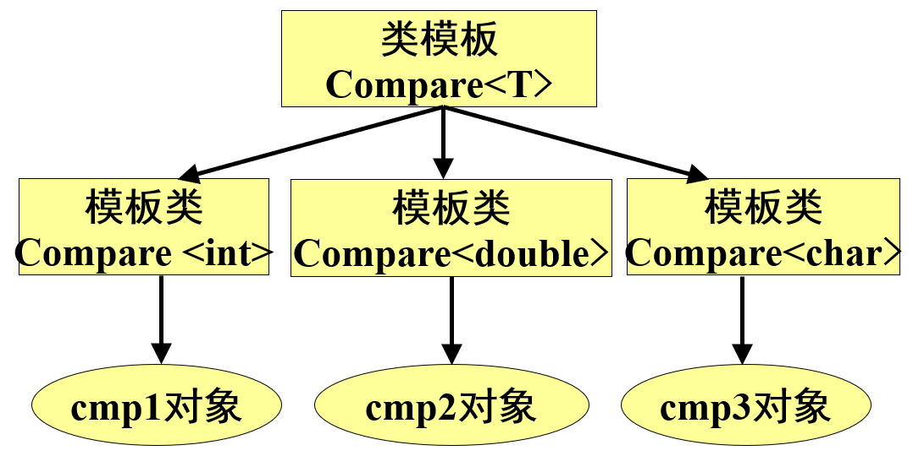

C++OOP
C++的初步知识
C++对C的扩充
名字空间
名字空间
C++标准库中的类和函数是在名字空间std中声明的。
名字空间可以消除那些因重名而导致的命名冲突。
能在名字空间以外声明或定义的实体，同样也能在名字空间之内声明或定义。
一个名字空间由关键字namespace开始，通常后接一个标识符来标识名字空间。在名字空间开始和结束的地方分别用左右大括号标记。
假设两个名字空间都有变量inflag，那么定义的语法为：
1 2 3 4 5 6 7 8 9 10 11 12 13 namespace ns1{ int inflag; } namespace ns2{ int inflag; } ==> ns1::inflag=2 ; ns2::inflag=-3 ; ==> using ns1::inflag;inflag=2 ; ns2::inflag=-3 ;
无名的名字空间
C++允许使用没有名字的名字空间
1 2 3 namespace { int inflag; }
由于名字空间没有名字，因此无法在其它文件中引用。
无名名字空间内的成员的作用域为本文件从声明无名名字空间的位置开始到文件结束。
C++的输入/输出
C++的输入／输出是由I/O流类库提供的。流类对象cin和cout分别代表标准的输入设备和输出设备。它们在文件iostream声明。
用cout进行输出
在C++中输出操作 可理解为将数据插入到输出流对象中。屏幕 输出是标准输出操作，用来将表达式的结果输出到显示器的屏幕上。其一般形式可表示为：
1 cout<<表达式1<<表达式2<<…<<表达式n；
其中，cout 是预定义的标准输出流对象 ，<< 是输出运算符。用它可以输出各种不同类型的数据。
用cin进行输入
在C++中输入操作 可理解为从输入流对象中提取数据。键盘 输入是标准输入，其一般形式可表示为：
其中，cin 是预定义的标准输入流对象 ，>> 是输入运算符。
用const定义常量
C语言中常用#define命令来定义符号常量
C++通过给常量命名的方式定义常量：
1 2 const <数据类型名><常量名>=<表达式>;const int MaxLine =1000 ;
用const定义标识符常量时，一定要对其初始化。在说明时进行初始化是对这种常量置值的唯一方法 ，不能用赋值运算符对这种常量进行赋值。如
const常量与宏常量相比的优点：
const常量有数据类型，而宏常量没有数据类型。
有些集成化的调试工具可以对const常量进行调试，但不能对宏常量进行调试。
函数原型声明
在C语言中，如果函数调用的位置在函数定义之前，则应在函数调用之前对所调用的函数作声明。但如果所调用的函数是整型的，也可以不进行函数声明。
对于函数声明的形式，C语言建议 采用函数原型声明。
在C++中，如果函数调用的位置在函数定义之前，则要求在函数调用之前必须 对所调用的函数作函数原型声明。
函数声明的一般形式为
函数的重载
定义 在同一作用域中用同一函数名定义多个函数 ，这些函数的参数个数和参数类型不同，这些同名的函数用来实现不同的功能。
1 2 3 4 5 6 7 8 9 10 11 12 13 14 15 16 17 18 #include <iostream> using namespace std;int add (int ,int ) double add (double ,double ) int main () cout<<add (5 , 10 )<<endl; cout<<add (5.0 , 10.5 )<<endl; return 0 ; } int add (int x, int y) return x+y; } double add (double a, double b) return a+b; }
输出：
函数模板
为什么引入函数模板？函数重载存在的问题。
定义 实际上是一个通用函数，其函数类型和形参类型不具体指定，用一个虚拟的类型来代表。
凡是函数体相同的函数都可以用这个模板来代替，不必定义多个函数，只需在模板中定义一次即可。
在调用函数时系统会根据实参的类型来取代模板中的虚拟类型，从而实现了不同函数的功能。
函数模板的定义
1 template <typename 或 class T >
1 2 3 4 template <typename T>T max (T a,T b) { return (a>b)? a:b; }
只适用于函数的参数个数相同而类型不同，且函数体相同的情况。
函数模板是对一组函数的描述，它以任意类型T为参数及函数返回值。
函数模板不是一个实实在在的函数，编译系统并不产生任何执行代码。
当编译系统在程序中发现有与函数模板中相匹配的函数调用时，便生成一个重载函数，该重载函数的函数体与函数模板的函数体相同。
1 2 3 int max (int a,int b) return (a>b)? a:b; }
该重载函数称为模板函数 ，它是函数模板的一个具体实例，只处理一种唯一的数据类型。
定义 函数模板时可以使用多个类型参数，每个类型参数前面只需加上关键字typename或class，用逗号分隔：
1 2 3 4 template <class T1, class T2>T1 max (T1 a,T2 b) { return (a>b) ? a : (T1)b; }
函数模板比函数重载更方便，程序更简洁。
有默认参数的函数
一般情况下，在函数调用时形参从实参那里取得值，因此实参的个数应与形参相同。
C++可以给形参一个默认值，这样形参就不必一定要从实参取值。
1 2 3 函数声明：int area (int a=6 ) (1 ) area (7 ); (2 ) area (); <==> area (6 );
如果有多个形参，可以指定任意个默认值。
实参与形参的结合是从左至右进行的，因此指定默认值的参数必须放在形参列表中的最右端 。
必须在函数调用之前将默认值的信息通知编译系统。
当重载函数与默认参数函数共同使用 时，要注意出现二义性 问题。
引用(reference)
引用
定义 对变量起另外一个名字 (别名alias)，这个名字称为该变量的引用。
其中原变量名 必须是一个已定义过的变量。如：
1 2 int max ;int &refmax=max;
refmax并没有重新在内存中开辟存储单元，只是引用 max的单元。max与refmax在内存中占用同一地址，即同一地址两个名字 。
对引用类型的变量，说明以下几点：
引用在定义的时候要初始化
1 2 int &refmax; int &refmax=max;
对引用的操作就是对被引用的变量的操作
引用类型变量的初始化值不能是一个常数
一旦引用被声明，它就不能再指向其它的变量
1 2 3 int a1, a2;int &b=a1; int &b=a2;
对引用的初始化，可以用一个变量名，也可以用另一个引用
1 2 3 int a=3 ;int &b=a; int &c=b;
引用同变量一样有地址，可以对其地址进行操作，即将其地址赋给一指针。
1 2 3 4 int a, *p;int &m=a; p=&m; *p=10 ;
当&m的前面有类型符 时（如int &m），它必然是对引用的声明；如果前面无类型符（如cout<<&m）,则是取变量的地址。
对const常量的引用使用如下方式
1 2 3 4 int i=5 ;const int &a=i; a =3 ； i =3 ；
以下的声明是非法的
企图建立void类型的引用 void &a
企图建立引用的数组 int & a[6]
企图建立指向引用的指针 int & *p
指针与引用的区别： 1. 指针是通过地址间接 访问某个变量，而引用是通过别名直接 访问某个变量。 2. 引用必须初始化，而一旦被初始化后不得再作为其它变量的别名 。指针若不进行初始化，编译器不会报错。
引用与函数
引用的用途主要是用来作函数的参数 或函数的返回值 。
作函数的参数
C语言中函数的参数传递有两种情况：
将变量名作为实参
1 2 3 4 5 6 7 8 9 10 11 12 13 14 15 16 #include <iostream> using namespace std;void swapint (int a, int b) int temp; temp = a; a = b; b = temp; } int main () int i = 3 , j = 5 ; swapint (i, j); cout << i <<“,”<< j << endl; return 0 ; }
传递变量的指针
1 2 3 4 5 6 7 8 9 10 11 12 13 14 15 16 #include <iostream> using namespace std;void swapint (int *p1, int *p2) int temp; temp = *p1; *p1 = *p2; *p2 = temp; } int main () int i = 3 , j = 5 ; swapint (&i, &j); cout << i <<“,”<< j << endl; return 0 ; }
C++把变量的引用作为函数形参，即传送变量的别名。
1 2 3 4 5 6 7 8 9 10 11 12 13 14 void swapint (int &a, int &b) int temp; temp = a; a = b; b = temp; } int main () int i = 3 , j = 5 ; swapint (i, j); cout << i <<“,”<< j << endl; return 0 ; }
引用和指针变量作为形参的区别
引用作为形参，实参是变量 ;指针变量作形参,实参是地址 。
指针变量要另外开辟内存单元，其内容是地址；引用不是一个独立的变量，不单独占内存单元。
必须用指针运算符*来表示指针变量所指向的变量；而引用就代表该变量。
引用比指针更直观、方便、容易理解。
作函数的返回值
一般情况下，函数不作为左值 （即函数不能放在赋值号左边）。
如果将函数定义为返回引用类型，因为返回的是一个变量的别名，就可以将函数放在左边，即给这个变量赋值。
这一点类同于函数的返回值为指针类型 。
1 2 3 4 5 6 7 8 9 10 11 12 13 14 int a = 4 ;int &f (int x) a = a + x; return a; } int main () int t = 5 ; cout << f (t) << endl; f (t) = 20 ; cout << f (t) << endl; return 0 ; }
一个函数返回引用类型，必须返回某个类型的变量 。
返回的变量的引用，这个变量必须是全局变量或静态局部变量，即存储在静态区中的变量。
1 2 3 4 5 6 7 8 9 10 11 12 13 14 15 int &f (int &x) static int t = 2 ; t = x++; return t; } int main () int a = 3 ; cout << f (a) << endl; f (a) = 20 ; a = a + 5 ; cout << f (a) << endl; return 0 ; }
内联函数
调用函数需要一定的时间，如果有的函数需要频繁使用，则累计所用时间会很长，从而降低程序的执行效率。
C++提供一种提高效率的方法，即在编译时将所调用函数的代码嵌入到主函数中。这种嵌入到主函数中的函数称为内联函数 (inline function，内置函数 ，内嵌函数 )
内联函数是C++对C函数的扩充，是一种以空间效率换取时间效率 的机制。
内联函数定义的一般格式为：
1 2 3 4 inline <函数值类型> <函数名>(<参数表>){ <函数体> }
调用内联函数时，编译器首先检查调用是否正确（类型安全检查或者自动进行类型转换）。如果正确，则将内联函数的代码直接替换函数调用，并且用实参换形参 ，于是省去了函数调用的开销。因此，内联机制增加了空间开销而节约了时间开销。
内联函数与用#define命令实现的带参宏定义有些相似，但不完全相同
1 2 3 4 5 #define Max(a,b) (a)>(b) ? (a) : (b) inline int max (int a, int b) return a > b ? a : b; }
用内联函数可以达到用#define宏置换的目的，但不会出现带参宏定义的副作用。
慎用内联 * 使用内联函数可以节省运行时间，但却增加了目标程序的长度。 * 函数体内出现循环或递归等复杂的结构控制语句时，不适合定义为内联函数。 * 一个好的编译器将会根据函数的函数体，自动取消不值得的内联。
作用域运算符
每一个变量都有其有效的作用域，只能在变量的作用域内使用该变量，不能直接使用其它作用域中的变量
1 2 3 4 5 6 7 8 9 10 #include <iostream> using namespace std;float a = 13.5 ;int main () int a = 5 ; cout << a << endl; cout << ::a << endl; return 0 ; }
字符串变量
C++用一种更方便的字符串类型(string类型)定义字符串变量。string不是基本类型，是一个字符串类
定义字符串变量
1 string string1; string string2=“China”;
对字符串变量的赋值
1 string1=“Canada”; string1=string2;
在定义字符串变量时不需指定长度，它的长度随其中的字符串长度而改变
可以对字符串变量中某一字符进行操作 string2[2]=‘a’;
字符串常量以‘\0’作为结束符，但将字符串常量存放到字符串变量中时，只存放字符串本身而不包括‘\0’
字符串变量的输入输出
1 cin>>string1; cout<<string2;
字符串变量的运算
用赋值运算符实现字符串复制
```cpp string1=string2; 与strcpy(string1,string2);相似1 2 3 4 5 * 用加法运算符实现字符串连接 ```cpp string1=string1+string2;
用关系运算符(==,>,<,!=,>=,<=)实现字符串比较
字符串数组
1 string name[3 ]={“Zhang”,”Li”,”Wang”};
在一个字符串数组中包含若干个元素，每个元素相当于一个字符串变量
不要求每个字符串元素具有相同的长度，即使对同一个元素而言，它的长度也可以变化
每一个字符串元素中只包含字符串本身的字符而不包括‘\0’
动态分配/撤销内存(new/delete)
C语言利用malloc和free分配和撤销内存空间。
使用malloc必须指定需要开辟的内存空间的大小，而且其返回值为 void *类型，必须进行强制类型转换才能使其返回的指针指向具体的数据。
new运算从堆中分配一块与<类型>相适应的存储空间，若分配成功，将这块存储空间的起始地址存入<指针变量名>。new的使用格式为：
1 2 3 <指针变量名>=new <类型>; <指针变量名>=new <类型>(<初值>); <指针变量名>=new <类型>[<元素个数>];
delete运算符用来释放<指针变量名>指向的动态存储空间。使用格式如下：
1 2 delete <指针变量名> delete[] <指针变量名>
其中，第2种格式用于释放指针指向的连续存储空间，即释放数组占用的空间。
动态整数存储空间。
1 2 3 4 (1 ) int *p = new int ; delete p; (2 ) int *p = new int (3 ); delete p;
连续存储空间（即数组空间）。
1 2 int *p = new int [5 ]; delete [] p;
测试
1.找出下面程序的错误。
1 2 3 4 5 6 7 8 9 10 11 12 #include <iostream> using namespace std;int main () int a,b; c=add (a,b) cout<<"a+b=" <<c<<endl; return 0 ; } int add (int x,int y) { z=x+y; return (z); }
2.写出下面程序的输出结果。
1 2 3 4 5 6 7 8 9 10 11 12 void dd (int &x,int &y,int z) y=y-x; z=10 ; cout<<x<<", " <<y<<", " <<z<<endl; } int main () int a=3 ,b=4 ,c=5 ; for (int i=0 ;i<2 ;i++) dd (a,b,c); cout<<a<<"," <<b<<", " <<c<<endl; return 0 ;}
类和对象的特性
面向过程与面向对象
面向过程的软件开发方法 * 按照功能划分软件的结构 * 自顶向下的设计方法 * 以函数作为程序主体
面向对象的软件开发方法 * 将软件系统看作各种对象的集合 * 系统结构比较稳定 * 对象将数据及函数的具体实现方式进行封装 * 提高了软件的可重用性、可维护性和可扩展性
面向过程编程与面向对象编程的区别： * 面向过程编程先确定算法，再确定数据结构；面向对象编程先确定数据结构，再确定运算。 * 面向过程编程的程序员，习惯于建立数据结构存放数据，并定义函数来操作数据；面向对象编程的程序员则构造一个对象模型，将数据与函数组织在一起。
掌握面向对象的困难之处在于思路的转换
我们通常习惯于考虑解决问题的方法，而不是考虑将问题抽象成对象再去解决它。
对象和类
对象是什么？
实际的对象
可以被感官感知的实物
思想、感觉或行为所及的概念或物理上的东西
软件对象
将状态（数据）和行为（功能）捆绑在一起的软件结构/模块，这两个部分合起来表示实际（物理或概念）对象的抽象
对象的状态/数据/属性
学生 对象的状态/数据
1 2 3 4 5 6 姓名 学号 出生日期 地址 专业 本学期选择的课程清单
课程 对象的状态/数据
1 2 3 4 课程编号 课程名称 课程所需的学时 讲授该课程的教师名单
对象的行为/操作/函数
类是什么？
类是描述一组相似对象共有特征的抽象
每一个属于该类的对象的数据结构（也就是属性的名称和类型）
由这些对象执行的操作/函数 （如何命令对象执行这些操作，以及为了实际执行这些操作对象必须执行的后台动作 ）
类定义的实例
实例化对象
从类创建某个对象的过程
对象和类的关系
对象是类的一个具有特定属性值的具体实例
从一个类可以创建（实例化）多个对象
相同类的两个对象具有相同的属性和函数，但属性值不同
类的定义
概念的抽象
类的UML表示法
类的定义方式
其中，类成员包括数据成员和成员函数。
账户Account结构体类型
1 2 3 4 5 6 7 8 9 10 11 12 13 14 struct Account { char id[16 ]; char name[50 ]; char pwd[6 ]; double balance; }; int main () struct Account a; a.balance = 10000 ; cout<<"balance = " <<a.balance <<endl; return 0 ; }
在C++中，一个结构体代表一个所有成员都是public的类，该类不能对外界隐藏自己的重要信息和私密信息。结构体表示一个没有封装的类。
需要对账户类进行封装！C++提供了类机制。
账户类的代码如下：
1 2 3 4 5 6 7 class Account { char id[16 ]; char name[50 ]; char pwd[6 ]; double balance; };
同理，Account类对象可定义为：
示例类的信息隐藏特性。
1 2 3 4 5 6 7 8 9 10 11 12 13 class Account { char id[16 ]; char name[50 ]; char pwd[6 ]; double balance; }; int main () Account a; a.balance = 10000 ; return 0 ; }
进一步细化类定义的一般格式为：
1 2 3 4 5 6 7 class <类名>{ <访问控制符>: <成员函数> <访问控制符>: <数据成员> };
访问权限控制
访问控制符包括public（公有）、private（私有）和protected（保护）。
三种访问权限的成员与 出现的先后顺序无关 ，并且允许多次出现，但是一个成员只能具有一种访问属性。
一般来说，将类的public成员放在类体的前面，将protected、private成员放在类体的后面。
时间类
1 2 3 4 5 6 7 8 class Time { public : void SetTime (int NewH, int NewM, int NewS) void ShowTime () private : int Hour,Minute,Second; };
公有成员（public member）
公有成员在程序的任何地方 都可以被访问，是类的对外接口 。而且在类外只能访问类的公有成员（继承除外）。
一般来说，成员函数的访问权限设为公有的，类外通过公有成员函数来操纵该类对象的属性。
私有成员（private member）
私有成员只能 被本类中的成员函数和友元 访问，而不能被类外调用。所谓类外指的是普通函数或其他类的成员函数。
一般来说，数据成员的访问权限设为私有的或保护的（如果有继承关系时）。
保护成员（protected member）
保护成员具有双重性 ，对其派生类而言，保护成员如同公有成员；对其他程序则表现得像私有成员。
一般来说，程序中有类继承时，可以将部分类成员定义为保护成员，以便派生类访问，同时，对类簇外又实现了信息隐藏。
进一步细化
1 2 3 4 5 6 7 8 class <类名>{ <访问控制符>: <成员函数的声明> <访问控制符>: <数据成员的声明> }; <成员函数的实现>
类定义一般分为说明部分和实现部分。说明部分是说明该类中的成员，实现部分是对成员函数的定义。格式如下：
数据成员
数据成员的声明看起来很像变量声明。但是，数据成员不能在类体中被显式地初始化。
1 2 3 4 5 6 class Time { int Hour=0 ; int Minute=0 ; int Second=0 ; };
类的数据成员将通过构造函数 进行初始化。
成员函数
类的成员函数的声明与一般函数的声明一样：
参数表中可以只含参数类型而不含参数名
成员函数的实现方式
成员函数是类中描述行为的成员，同时也是对封装的数据进行操作的唯一途径。
成员函数的实现既可以在类中 ，也可以在类外 。从类定义的格式可知，一般 在类中声明成员函数，在类外具体实现成员函数。
如果成员函数已经在类中定义，则不需要在类外实现。需要注意的是，在类中定义的成员函数自动成为内联函数。
在类中实现成员函数
1 2 3 4 5 6 7 8 9 10 11 12 13 14 15 16 17 #include <iostream> using namespace std;class Time { public : void SetTime (int NewH, int NewM, int NewS) { Hour=NewH; Minute=NewM; Second=NewS; } void ShowTime () { cout<<Hour<<":" <<Minute<<":" <<Second<<endl; } private : int Hour,Minute,Second; };
在类外实现成员函数
若在类体外实现，则需要使用作用域运算符“::” ，用它来标识 某个成员函数是属于哪个类的，其定义格式如下：
1 2 3 4 <函数值类型> <类名>::<成员函数名>(<参数表>) { <函数体> }
虽然在类外定义成员函数，但它仍能访问类的任何成员。成员函数必须先在类内声明，而且类体必须在成员函数定义之前出现。
时间类（单文件）
1 2 3 4 5 6 7 8 class Time { public : void SetTime (int NewH,int NewM,int New S) void ShowTime () private : int Hour,Minute,Second; };
1 2 3 4 5 6 7 8 9 10 11 void Time::SetTime (int NewH,int NewM,int New S) Hour=NewH; Minute=NewM; Second=NewS; } void Time::ShowTime () cout<<Hour<<":" <<Minute<<":" <<Second<<endl; }
时间类（多文件）
1 2 3 4 5 6 7 8 9 10 11 #include <iostream> using namespace std;class Time { public : void SetTime (int NewH, int NewM, int NewS) void ShowTime () private : int Hour,Minute,Second; };
1 2 3 4 5 6 7 8 9 10 11 12 #include "time.h" void Time::SetTime (int NewH, int NewM, int NewS) Hour=NewH; Minute=NewM; Second=NewS; } void Time::ShowTime () cout<<Hour<<":" <<Minute<<":" <<Second<<endl; }
将类的声明和实现分别放在两个不同的文件中，这样做有以下几点好处： * 类的实现文件通常较大，分开便于阅读、管理和维护。 * 对软件开发商而言，他们可以向用户提供一些程序模块的接口，而不公开程序的源代码。分开管理就可以很好地解决此问题。 * 将类定义放在头文件中，以后使用不必再定义，只须一条包含命令即可，实现了代码重用。 * 便于团队对大型软件的分工合作开发。
创建对象
对象的定义格式与普通变量相同。定义格式如下：
<对象名表>中可以有一个或多个对象名 。当有多个对象名时，用逗号分隔。<对象名表>中还可以是指向对象的指针名 或引用名 ，也可以是对象数组名 。
对象创建的另一种方式：
在声明类的同时创建对象。
1 class Time {…} time1,time2;
对象的UML表示法
类成员的访问
面向对象程序设计中，对类成员的访问往往通过接口 （类的成员函数）实现。
在设计接口时，应注意为该类可以暴露 给外界的信息提供接口，同时隐藏 私密信息。
定义了类及其对象，就可以通过对象来使用其公有成员，从而达到对对象内部属性的访问和修改。
在类中 可直接 使用成员名访问 类成员，public、private和protected属性的成员都可以被访问。
类外访问对象中的成员可以有3种方法：
通过对象名和成员运算符访问对象中的成员。
通过指向对象的指针变量访问对象中的成员。
通过对象的引用访问对象中的成员。
1 2 3 4 5 6 7 8 9 10 11 12 13 14 15 16 17 18 19 20 21 22 class A { int x, y; public : int m, n; void Setxy (int a, int b) { x = a; y = b; } void Print () }; int main () A a1, a2; a1.m = 10 ; a1.n = 20 ; a1.Setxy (2 , 5 ); a1.Print (); return 0 ; }
用成员运算符“.”只能访问对象的公有成员 ，而不能访问对象的私有成员或保护成员。
若要访问对象的私有的数据成员，只能通过对象的公有成员函数 来获取。
1 2 3 4 5 6 7 8 9 10 11 12 13 14 15 16 17 18 19 20 21 22 23 class A { int x, y; public : int m, n; void Setxy (int a, int b) { x = a; y = b; } void Print () }; int main () A a1, a2; a1.m = 10 ; a1.n = 20 ; a1.x = 2 , a1.y = 5 ; a1.Setxy (2 , 5 ); a1.Print (); return 0 ; }
类作用域
类体的区域称为类作用域 。类的成员函数与数据成员，其作用域都是属于类的作用域，仅在该类的范围内有效，故不能在主函数中直接通过函数名和成员名来调用 。
1 2 3 4 5 6 7 8 9 10 11 12 13 14 15 16 17 18 19 20 21 22 class A { float x, y; public : float m, n; void Setxy (float a, float b) { x = a; y = b; } void Print (void ) }; int main () A a1, a2; m = 20 ; n = 10 ; Setxy (2.0 , 5.0 ); Print (); return 0 ; }
时间类
1 2 3 4 5 6 7 8 9 10 int main () Time time1; time1.SetTime (0 ,0 ,0 ); time1.ShowTime (); Time time2; time2.SetTime (8 ,30 ,5 ); time2.ShowTime (); return 0 ; }
在主函数的末尾加上一句：
1 cout<<sizeof (time1)<<endl<<sizeof (time2);
由此说明，各对象空间中只有数据成员 ，而无成员函数 的空间。成员函数只存储一份，由对象共享。
测试
找出程序中的错误，并改正。
1 2 3 4 5 6 7 8 9 10 11 12 13 14 15 16 17 18 19 20 21 22 23 24 25 26 #include <iostream> using namespace std;class Time { void set_time () void show_time () int hour; int minute; int sec; }; Time t; int main () set_time (); show_time (); return 0 ; } void set_time () cin>>t.minute; cin>>t.sec; } void show_time () cout<<t.hour<<“:”<<t.minute<<“:”<<t.sec<<endl; }
使用类和对象
构造函数和析构函数
当没有给数据成员赋值时，其运行结果是随机数。
不少难以察觉的程序错误是由于变量没有被正确初始化或清除造成的，而初始化和清除工作很容易被人遗忘。
C++语言充分考虑了这个问题并很好地予以解决：把对象的初始化工作放在构造函数中，把清除工作放在析构函数中 。
当对象被创建时，构造函数被自动执行，当对象消亡前，析构函数被自动执行。
构造函数
构造函数的功能是在定义对象时被编译系统自动调用来创建对象并初始化对象。
其定义格式如下：
1 2 3 4 <类名>::<类名>(<参数表>) { <函数体> }
构造函数名与类名相同 ；没有 函数值类型
无参构造函数
之前的例子都没有定义构造函数，那么它们的对象是怎么创建的呢???
默认的无参构造函数
事实上，如果在类中没有显式定义构造函数，那么编译系统就会自动生成一个默认形式的构造函数 ，这个构造函数的功能仅用于创建对象。其格式如下：
默认的构造函数并不对所产生对象的数据成员赋初值；即新产生对象的数据成员的值是不确定的。
在定义类时，只要显式定义了一个类的构造函数，则编译器就不产生默认的构造函数
不存在没有构造函数的对象！
带参数的构造函数
一般格式为：
1 <构造函数名>（<类型1> <形参1>，<类型2> <形参2>，…）；
则定义对象的格式为：
1 <类名> <对象名>（<实参1>，<实参2>，…）；
将无参构造函数Time()与SetTime(…)合二为一，形成带参构造函数。
1 2 3 4 5 6 7 8 9 Time (int NewH, int NewM, int NewS); Time::Time (int NewH, int NewM, int NewS) { Hour=NewH; Minute=NewM; Second=NewS; cout<<"构造函数被调用！" <<endl; }
类的数据成员的初始化
1 2 3 4 5 6 7 8 9 Box::Box (int h,int w,int len) { height=h; width=w; legth=len; } Box::Box (int h,int w,int len) :height (h),width (w),length (len) {}
带默认参数的构造函数
1 2 3 4 5 6 7 Box (int w=10 ,int h=10 ,int len=10 ); Box::Box (int w,int h,int len) { height=h; width=w; length=len; }
在声明构造函数时，形参名可以省略
带默认参数的构造函数和重载构造函数同时使用时，要注意二义性问题。
1 2 3 4 5 6 7 8 9 10 11 12 class A {public : A (int a=3 ,int b=2 ){x=a; y=b; } A ( ){ x=0 ; y=0 ; } void Print ( ) private ：int x,y;}; int main ( ) A a2 (7 ,5 ) ; A a1; return 0 ; }
构造函数的特点
构造函数是成员函数，函数体可写在类中，也可写在类外。
构造函数的名字必须 与类名同名，而不能由用户任意命名。
构造函数不能 指定函数值类型，甚至void也不行。
构造函数可以没有参数，也可以有参数，允许重载，即可以定义参数不同的多个构造函数。
每个类都必须有一个构造函数，且是公有成员。如果用户自己没有定义构造函数，则C++系统会自动生成一个构造函数，只是这个构造函数没有参数，函数体也是空的，不执行初始化操作。
在定义类对象时，构造函数由系统自动调用，而不是像其他成员函数一样，由用户显式调用。
析构函数
析构函数的功能是在对象的生存期即将结束的时刻，由编译系统自动调用来完成一些清理 工作。
析构函数也是类的一个公有成员函数，它的名称是由类名前面加“~”构成，也不指定返回值类型 。
其定义格式如下：
1 2 3 4 <类名>::~<类名>() { <函数体> }
1 2 3 4 5 ~Box (); Box::~Box () { cout<<“This is destructor!”<<endl; }
如果没有定义析构函数，同构造函数一样，编译系统会提供默认形式的析构函数：
<类名>::~<类名>(){}
析构函数的特点
析构函数是成员函数，函数体可写在类体内，也可以写在类体外。
析构函数的函数名与类名相同 ，并在前面加“~”字符，用来与构造函数加以区别。析构函数不指定返回值类型 。
析构函数没有参数 ，因此不能重载 。一个类中只能定义一个析构函数。
每个类都必须有一个 析构函数。如果类中没有显式定义析构函数，则编译系统自动生成一个默认 形式的析构函数，作为该类的公有成员。
析构函数在对象生存期结束前由编译系统自动调用。
构造函数和析构函数的调用顺序
在一般情况下，调用构造函数与声明对象的顺序相同，而调用析构函数的次序正好与创建对象的顺序相反。
### 构造函数析构函数的调用时机
全局对象 的构造函数在文件中的所有函数（包括main函数）执行之前调用。当main函数执行完毕或调用exit函数时，调用析构函数。
局部自动对象 在建立对象时调用构造函数。在函数调用结束、对象释放时先调用析构函数。
函数中的静态局部对象 ，在第一次调用此函数建立对象时调用一次构造函数，在调用结束时对象并不释放，因此也不调用析构函数， 只在main函数执行完毕或调用exit函数时，调用析构函数。
1 2 3 4 5 6 void fn ( ) Student stud1; static Student stud2;… }
函数调用顺序为：stud1的构造函数，stud2的构造函数，stud1的析构函数，stud2的析构函数。
复制（拷贝）构造函数
生成一个对象的副本有两种途径：对象的赋值和复制。
对象的赋值 （同类对象）
<对象1> = <对象2>;
1 2 3 4 5 6 7 8 9 10 11 12 13 14 15 16 17 18 19 20 21 22 23 24 25 26 27 28 class A { int x, y; public : int m, n; void Setxy (int a, int b) { x = a; y = b; } void Print () { cout << x << "," << y << endl; cout << m << "," << n << endl; } }; int main () A a1, a2; a1.m = 10 ; a1.n = 20 ; a1.Setxy (2 , 5 ); a2 = a1; a1.Print (); a2.Print (); return 0 ; }
相当于数据成员间相互赋值
对象的复制
<类名> <对象2>(<对象1>); <类名> <对象2>=<对象1>;
对象赋值与对象复制的不同
对象的赋值是对一个已经存在的对象赋值，因此必须先定义被赋值的对象，才能进行赋值。
对象的复制是从无到有地建立一个新对象，并使它与一个已有的对象完全相同。
用一个类对象初始化该类的另一个对象被称为默认按成员初始化 。
类的设计者也可以通过提供特殊的复制构造函数 （copy constructor）来改变默认的行为。
复制构造函数是一种特殊的构造函数，它的功能是用一个已知的对象 来初始化 一个被定义的同类的对象 。
复制构造函数的定义格式：
1 2 3 4 5 6 7 8 9 10 11 12 13 14 class <类名> { public： <类名>(<参数表>); //构造函数 <类名>(const <类名>& <对象名>); //复制构造函数的声明 … }; <类名>::<类名>(const <类名>& <对象名>) //复制构造函数的实现 { <函数体> }
如果程序员没有显式定义复制构造函数，编译系统就会自动生成一个默认形式的复制构造函数
其功能是创建新对象把已知对象的每个数据成员的值都复制到新创建的对象中，而不做其他处理。其格式如下：
1 2 3 4 5 <类名>::<类名>( const <类名>& <对象名>) { … //把已知对象的每个数据成员的值都 //复制到新创建的对象中，而不做其他处理 }
三种构造函数
1 2 3 Box(); //无参构造函数 Box(int h,int w ,int len):height(h),width(w),length(len){}//带参构造函数 Box(const Box& b);//复制构造函数
复制构造函数与普通构造函数的区别
形式上不同
1 2 <类名>(<参数表>); <类名>(const <类名>& <对象名>);
在建立对象时，实参类型不同
1 2 Box box1(15,30,25);//实参为整数 Box box2(box1);//实参是对象名
被调用的情况不同
普通构造函数在程序中创建对象时被调用
复制构造函数在用已有对象复制一个新对象时被调用，在以下3种情况下需要复制对象
程序中需要新建立一个对象，并用另一个同类的对象对它初始化：
1 2 Box box1 (15 ,30 ,25 ) ;Box box2=box1;或Box box2 (box1) ;
当函数的参数为类对象时，在调用函数时需要将实参对象完整地传递给形参：
1 2 3 4 5 6 7 8 void fun (Box b) int main () Box box1 (12 ,15 ,18 ) ; fun (box1); return 0 ; }
当函数的返回值是类的对象，在函数调用完毕将返回值带回函数调用处时：
1 2 3 4 5 6 7 8 9 10 11 Box f () Box box1 (10 ,20 ,30 ) ; return box1; } int main () Box box2; box2=f (); return 0 ; }
复制构造函数的特点
复制构造函数是成员函数，函数体可写在类中，也可以写在类外。
复制构造函数名与类名相同，并且也不指定函数值类型。
复制构造函数只有一个参数 ，并且是对同类对象的引用 。
每个类都必须有一个复制构造函数。如果类中没有显式定义复制构造函数，则编译系统自动生成一个默认形式的复制构造函数，作为该类的公有成员。
对象间的数据共享
静态成员是C++提供的解决同一个类的不同对象之间数据和函数共享问题的机制。
类的静态成员分为静态数据成员和静态成员函数。
类的非静态数据成员
一个类的所有对象具有相同的属性是指属性的个数、名称、数据类型相同，各个对象的属性值则可以各不相同。
这样的属性在面向对象方法中称为“实例属性 ”，在C++程序中以类的非静态数据成员 表示。
类的静态数据成员
面向对象方法中还有“类属性 ”的概念。如果某个属性为整个类所共有，不属于任何一个具体对象，则采用static关键字来声明为静态成员 。
静态成员 是类的所有对象共享的成员，而不是某个对象的成员，它在对象中不占存储空间 ，是属于整个类的成员 。
静态数据成员不随对象的建立而分配空间，也不随对象的撤销而释放。它是在程序编译时分配空间，到程序结束时才释放空间。
静态成员的定义
定义格式如下：
static <静态成员的定义>;
1 2 3 4 5 6 7 8 class A { int x,y; static int z; public : void Setxy (int a, int b) {x=a; y=b;}}; A a1, a2;
静态数据成员
静态数据成员是在所有对象之外单独开辟空间。
只要在类中定义了静态数据成员，即使不定义对象，也为静态数据成员分配空间，它可以被访问。
在一个类中可以有一个或多个静态数据成员，所有的对象共享这些静态数据成员，都可以访问它。
静态数据成员的初始化
不能 用参数初始化表对静态数据成员初始化，也不能 在构造函数体内初始化，静态数据成员只能 在类体外 进行初始化。
静态数据成员初始化格式如下：
1 <数据类型> <类名>::<静态数据成员名>=<值>;
不能在初始化语句中加static
1 2 3 4 5 6 7 8 9 10 11 12 13 14 15 16 17 18 19 20 21 22 23 24 25 26 27 28 29 30 31 class A { int i, j; static int x, y; public : A (int a = 0 , int b = 0 , int c = 0 , int d = 0 ) { i = a; j = b; x = c; y = d; } void Show () { cout << "i =" << i << "," << "j=" << j << "," ; cout << "x=" << x << "," << "y=" << y << endl; } }; int A::x = 0 ; int A::y = 0 ;int main () A a (2 , 3 , 4 , 5 ) ; a.Show (); A b (100 , 200 , 300 , 400 ) ; b.Show (); a.Show (); return 0 ; }
1 2 3 i=2,j=3,x=4,y=5 i=100,j=200,x=300,y=400 i=2,j=3,x=300,y=400
静态数据成员的使用
在类的成员函数中可以直接 访问该类的静态数据成员，而不必使用成员访问运算符或作用域运算符。
在类外必须 使用成员访问运算符或作用域运算符访问公有 静态数据成员。
1 2 <对象名>.<静态数据成员> <类名>::<静态数据成员>
静态数据成员与全局变量一样都是静态分配存储空间的，但全局变量在程序中的任何位置都可以访问它，而静态数据成员受到访问权限的约束。必须是public权限时，才可能在类外进行访问。
公有静态数据成员的作用域只限于定义该类的作用域内。在此作用域内，可以通过类名和作用域运算符访问静态数据成员，而不论类对象是否存在。
静态成员函数
静态成员函数就是使用static 关键字声明的成员函数。
和静态数据成员一样，静态成员函数是类的一部分，而不是对象的一部分。
静态成员函数的作用是为了能处理静态数据成员。
静态成员函数没有this 指针。
静态成员函数可以直接访问 该类的静态成员，但不能直接访问 类中的非 静态成员。
如果静态成员函数中要使用非静态成员时，必须通过参数传递方式得到对象名，然后可以通过对象名来访问非静态成员。
1 2 3 4 5 6 7 8 9 10 11 12 13 14 15 16 17 18 19 20 21 22 23 24 class Tc { private : int a; static int b; public : Tc (int c) { a = c; b += c; } static void display (Tc C) { cout << "a=" << C.a << ",b=" << b << endl; } }; int Tc::b = 2 ;int main () Tc A (2 ) , B (4 ) ; Tc::display (A); Tc::display (B); return 0 ; }
1 2 3 4 5 6 7 8 9 10 11 12 13 14 15 16 17 18 19 20 21 22 23 24 25 class Tc { private : int a; static int b; public : Tc (int c) { a = c; b += c; } static void display (Tc C) }; void Tc::display (Tc C) cout << "a=" << C.a << ",b=" << b << endl; } int Tc::b = 2 ;int main () Tc A (2 ) , B (4 ) ; Tc::display (A); Tc::display (B); return 0 ; }
对象指针
与基本数据类型的变量一样，每一个对象在创建之后都会在内存中占有一定的空间。
因此，既可以通过对象名访问对象，也可以通过对象的起始地址来访问一个对象，即对象指针。
对象指针就是用于存放对象数据起始地址的变量。
声明对象指针的一般格式为：
对象指针的初始化
一般格式为：
1 2 <类名> *<对象指针名>=&<对象名>; <对象指针名>=&<对象名>;
通过指针访问对象成员
一般格式如下：
1 2 3 4 <对象指针名> -> <公有成员> boxp->volumn(); (*<对象指针名>).<公有成员> (*boxp).volumn();
通过对象指针访问学生类的成员函数。
1 2 3 4 5 6 7 8 Student s1; s1.input (1 , "Zhang Hua" , 95 ); s1.display (); Student *pstu = &s1; pstu->input (2 , "Wang Li" , 90 ); pstu->display (); (*pstu).modify (85 ); (*pstu).display ();
动态对象
用new运算符创建动态对象的一般格式为：
1 2 new <类名>; new <类名>(<初值列表>);
用delete运算符删除new建立的对象，释放指针所指向的内存空间。使用格式如下：
1 2 3 4 5 6 7 8 9 10 11 12 int main() { Box *pbox1 = new Box; //定义指向Box对象的指针变量pbox1 cout << "The volume of box1 is " << pbox1->volume() << endl; delete pbox1; //释放pbox1指向的对象空间 Box *pbox2 = new Box(15, 30, 25); //定义指向Box对象的指针变量pbox2， //在pbox2中存放对象的起始地址并初始化对象 cout << "The volume of box2 is " << pbox2->volume() << endl; //指针访问成员 delete pbox2; //释放pbox2指向的对象空间 return 0; }
this指针
this指针是一个特殊的隐含 指针，它隐含于每一个成员函数（静态成员函数除外）中，也就是说，每个成员函数都有一个this指针参数 。
this指针指向调用该函数的对象，即this指针的值是当前被调用的成员函数所在的对象的起始地址 。
当一个对象调用成员函数时，编译系统先将对象的地址赋给this指针 ，然后调用成员函数，每次成员函数存取数据成员时，则隐含使用this指针。
通常不显式地使用this指针来调用数据成员。
1 2 3 4 5 6 7 8 9 10 11 Box a (15 , 18 , 20 ) , b (16 , 20 , 26 ) ;cout << "volume of a is " << a.volume () << endl; cout << "volume of b is " << b.volume () << endl; int Box::volume () return (height * width * length); } int Box::volume (Box *this ) return (this ->height) * (this ->width) * (this ->length); }
复制构造函数中隐含使用this指针。
1 2 3 TAdd (const TAdd& p) { x=p.x; y=p.y; cout<<"copy constructor." <<endl;}
构造函数中显式使用this指针。
1 2 3 TAdd (int x,int y) { this ->x=x; this ->y=y; cout<<"constructor." <<endl;}
this指针一般用于返回当前对象自身。
同样也可以使用*this 来标识调用该成员函数的当前对象。
this指针是一个const指针，成员函数不能对其进行赋值。
静态成员中不能访问this指针，因为静态成员函数不从属于任何对象。
this指针的另一种用法
1 2 3 4 5 6 void Student::copy_stud(const Student & stu) { if(this!=&stu) //this指针中含有被调用的类对象的地址 {… //把stu的值复制到*this中 } }
### 成员指针
类的成员可能是一些变量、函数或者对象等，因此可以将它们的地址存放到一个指针变量中。这样，就可以使指针直接指向对象的成员，进而可以通过这些指针访问对象的成员。
这样的指针称为成员指针 ，或者说是指向对象的成员的指针变量。
指向非静态数据成员的指针
定义指向对象数据成员的指针变量的方法和定义指向普通变量的指针变量方法相同。
一般形式为：
指向非静态成员函数的指针
定义指向公有成员函数的指针变量的一般形式为：
1 数据类型名 (类名:: *指针变量名)(参数列表)；
使指针变量指向一个公有成员函数的一般形式为：
通过成员函数指针、对象指针、对象访问公有成员函数。
1 2 3 4 5 6 7 8 9 10 11 12 13 14 15 16 17 18 19 20 21 class Point { public : Point (int xx=0 ,int yy=0 ) { X=xx; Y=yy; } int GetX () return X;} int GetY () return Y;} private : int X,Y; }; Point A (4 ,5 ) ;Point *p1=&A; int (Point::*pGetX)()= Point::GetX; cout<<(A.*pGetX)()<< '\t' ; cout<<(p1->GetX)()<< '\t' ; cout<<A.GetX ()<<endl;
指向类的静态成员的指针
对类的静态成员的访问是不依赖于对象的，因此可以用普通的指针来指向和访问静态成员。
【例】通过指针访问类的静态数据成员。
1 2 3 4 5 6 7 8 9 10 11 12 13 14 15 16 17 18 19 20 21 22 23 24 25 26 27 28 29 30 31 32 33 34 35 36 37 class Point { public : Point (int xx = 0 , int yy = 0 ) { X = xx; Y = yy; count++; } Point (const Point &p); int GetX () return X; } int GetY () return Y; } static int count; private : int X, Y; }; int Point::count = 0 ; Point::Point (const Point &p) { X = p.X; Y = p.Y; count++; } int main () int *countp = &Point::count; Point A (4 , 5 ) ; cout << "Point A: " << A.GetX () << "," << A.GetY (); cout << " Object id= " << *countp << endl; Point B (A) ; cout << "Point B: " << B.GetX () << "," << B.GetY (); cout << " Object id= " << *countp << endl; return 0 ; }
1 2 Point A：4,5 Object id=1 Point B：4,5 Object id=2
【例】定义函数指针访问类的静态成员函数。
1 2 3 4 5 6 7 8 9 10 11 12 13 14 15 16 17 18 19 20 21 22 23 24 25 26 27 28 29 30 31 32 33 34 35 36 37 38 39 40 class Point { public : Point (int xx = 0 , int yy = 0 ) { X = xx; Y = yy; count++; } Point (const Point &p); int GetX () return X; } int GetY () return Y; } static void GetC () { cout << "Object id=" << count << endl; } private : int X, Y; static int count; }; Point::Point (const Point &p) { X = p.X; Y = p.Y; count++; } int Point::count = 0 ; int main () void (*gc)() = Point::GetC; Point A (4 , 5 ) ; cout << "Point A: " << A.GetX () << "," << A.GetY (); (*gc)(); Point B (A) ; cout << "Point B: " << B.GetX () << "," << B.GetY (); gc (); return 0 ; }
对象引用
引用（Reference）是某个变量（对象）的别名（alias）。
指针通过地址间接访问对象，而引用是直接访问对象。
【例】示例对象的引用。
1 2 3 4 5 6 Time myTime; Time &refTime=myTime; cout<<"First Time set and output:" <<endl; refTime.SetTime (12 ,0 ,0 ); refTime.ShowTime (); myTime.ShowTime ();
如果实参是对象，那么“通过值来传递一个对象”的具体含义是由这个对象的复制构造函数定义的。
1 2 3 Student returnS (Student s) {return s;}Student stu1; stu1.returnS (stu1);
避免通过值来传递对象，而是通过引用来传递。
1 2 Student& returnS (Student& s) return s;}
参数传递的是引用，没有构造函数或析构函数被调用，节约了系统资源，提高了运行效率。
共享数据的保护
常量定义格式如下：
1 const <数据类型名> <常量名>=<表达式>;
例：
1 2 const float PI; PI=3.1415926; //错误,常量在程序运行过程中不允许改变，因此在定义时必须初始化。
常对象
常对象是其数据成员值 在对象的整个生存期间内不能被改变 的对象。
1 2 3 const <类名> <对象名>(<初始化值>); <类名> const <对象名>(<初始化值>);
常对象的所有数据成员都是常量，不能改变。因此，常对象必须初始化。
不能 通过常对象调用普通的成员函数，可以调用常成员函数。
如果要修改常对象中某个数据成员的值，可以将数据成员声明为mutable ，这样就可以用声明为const的成员函数来修改它的值。
类的常成员
类的数据成员和成员函数可以声明为const，分别为常数据成员和常成员函数。
常数据成员
在任何函数中都不能对常数据成员赋值。
只能 通过构造函数的参数初始化表对常数据成员进行初始化。
1 2 const int Hour; Time::Time(int h):Hour(h){}
类的所有对象中的常数据成员的值均不能改变，但不同对象中的该数据成员的值可以不同（在定义对象时给出）。
【例】示例常数据成员。
1 2 3 4 5 6 7 8 9 10 11 12 13 14 15 16 17 18 19 20 21 22 23 24 25 26 27 28 class A { public : A (int i); void print () private : const int a; static const int b; }; const int A::b = 10 ;A::A (int i) : a (i) { } void A::print () cout << a <<”:”<< b << endl; } int main () A a1 (100 ) , a2 (0 ) ; a1.print (); a2.print (); return 0 ; }
常成员函数
通过常成员函数来引用本类中的数据成员，但不能修改它们。
1 <数据类型><函数名>(<参数表>)const;
const是函数类型的一部分，在声明函数和定义函数时都要有const，在调用时不必加const。
常成员函数不能更新 对象的数据成员，也不能调用 该类中的非const成员函数 。
通过常对象只能调用它的常成员函数，而不能调用其他成员函数。
常对象中的成员函数不是常成员函数，除非成员函数有const修饰。
const关键字可以用于对重载函数的区分。
1 2 3 4 5 6 7 8 9 10 11 12 13 14 15 16 17 18 19 20 21 22 23 24 25 26 27 28 29 30 31 32 #include <iostream> using namespace std;class R { public : R (int r1, int r2) { R1 = r1; R2 = r2; } void print () void print () const private : int R1, R2; }; void R::print () cout << R1 << "-" << R2 << endl; } void R::print () const cout << R1 << "+" << R2 << endl; } int main () R a (5 , 4 ) ; a.print (); const R b (20 , 52 ) b.print (); return 0 ; }
const成员和非const成员之间的调用关系
非const数据成员
可以引用，也可以改变值
可以引用，但不可以改变值
const数据成员
可以引用，但不可以改变值
可以引用，但不可以改变值
const对象的数据成员
不允许引用和改变值
可以引用，但不可以改变值
const与指针
指向对象的常指针 ：指针变量声明为const型并初始化，指针本身的值不能改变，即其指向不能改变 。
1 2 3 Time t1 (10 ,12 ,15 ) ,t2 ;Time *const ptr1=&t1; ptr1=&t2;
常指针始终指向同一个对象，但是可以改变其所指对象中数据成员的值 。
指向常对象的指针：
如果存在一个常对象，只能 用指向常对象的指针指向它，而不能用非const型的指针指向它。
指向常对象的指针还可以指向非const型的对象，此时不能通过指针改变该对象的值；但是指针本身的值可以改变。
1 2 3 4 5 Time t1 (10 ,12 ,15 ) ,t2 ;const Time *p=&t1;(*p).hour=18 ; t1.hour=18 ; p=&t2;
指向常对象的指针可以指向const和非const型的对象，而指向非const型对象的指针只能指向非const的对象。
常引用
如果在声明引用时用const修饰，被声明的引用就是常引用。
常引用所引用的对象不能被更新。
1 void fun(const Time &t);
在函数中不能改变t的值，也就是不能改变其对应的实参对象的值。
对象数组
对象数组的元素是对象。声明一维对象数组的一般格式为：
在建立数组时，需要调用构造函数。数组中有多少个元素，就调用多少次构造函数。
在定义数组时可以提供实参以实现初始化。
如果构造函数只有一个参数，在定义数组时可以直接在等号后面的大括号内提供实参。
1 Student stud[3]={60,70,78};
如果构造函数有多个参数，在定义对象数组时在大括号中分别写出构造函数并指定实参。
1 2 Ex (int x=0 , char c=‘c’); Ex z[2 ]={Ex (10 ,'a' ),Ex (1 ,'d' )};
每个数组元素都是对象，通过该对象，便可以访问到它的公有成员。
【例】示例对象数组。
1 2 3 4 5 6 7 8 9 10 11 12 13 14 15 16 17 18 19 20 21 22 class Box { public : Box (int h = 10 , int w = 12 , int len = 15 ) ：height (h), width (w), length (len) {} int volume () private : int height; int width; int length; }; int Box::volume () return height * width * length; } int main () Box a[2 ] = {Box (10 , 12 , 15 ), Box (15 , 18 , 20 )}; cout << "volume of a[0] is：" << a[0 ].volume () << endl; cout << "volume of a[1] is：" << a[1 ].volume () << endl; return 0 ; }
【例】示例动态对象数组。
1 2 3 4 5 6 7 8 9 10 11 12 13 14 15 16 17 18 19 20 21 22 23 24 25 26 27 28 29 30 31 32 33 34 35 36 37 38 39 40 41 42 43 44 45 46 47 class CPoint { public : CPoint (int x0, int y0 = 0 ) { x = x0; y = y0; cout << "constructor1" << endl; } CPoint () { x = 0 ; y = 0 ; cout << "constructor2" << endl; } void input (int x0 = 0 , int y0 = 0 ) { x = x0; y = y0; } void print () " " << y << endl; } private : int x, y; }; int main () CPoint *ptr = new CPoint[5 ]; int x, y; if (!ptr) { cout << "allocation failure" << endl; return 0 ; } cout << "input data：" ; for (int k = 0 ; k < 5 ; k++, ptr++) { cin >> x >> y; ptr->input (x, y); } cout << "output:" << endl; for (int k = 0 ; k < 5 ; k++) (--ptr)->print (); delete [] ptr; return 0 ; }
对象成员
用类对象作为另一个类的成员，这个成员称为对象成员或者子对象。
1 2 3 4 5 6 7 8 9 class A { int i; }; class B { int j; A a; //对象成员 };
对象成员的初始化
对象成员的初始化有两种情况，一种是在构造函数成员初始化表中被初始化，一种是在函数体内被初始化。
1 2 3 4 5 6 7 8 class B { public : B (const A &a); private : A m_a; };
对象成员在初始化列表中被初始化
1 2 3 4 B::B (const A &a) : m_a (a) { … }
对象成员在函数体内被初始化
1 2 3 4 5 B::B (const A &a) { m_a = a; … }
【例】示例对象成员。
用Point类来描述点
1 2 3 4 5 6 7 8 9 10 11 12 13 14 15 16 17 18 19 20 class Point { public : Point (int xx = 0 , int yy = 0 ) { X = xx; Y = yy; } Point (const Point &p) { X = p.X; Y = p.Y; cout << "In Point copy constructor." << endl; }; int GetX () return X; } int GetY () return Y; } private : int X, Y; };
定义线段距离Distance类来计算两个点之间的距离，在构造函数中实现。
1 2 3 4 5 6 7 8 9 10 11 12 13 14 15 16 17 18 19 20 21 22 23 24 25 26 class Distance { public : Distance (Point xp1, Point xp2); double GetD () return dist; } private : Point p1, p2; double dist; }; Distance::Distance (Point xp1, Point xp2) : p1 (xp1), p2 (xp2) { cout << "in Distance constructor." << endl; double x = double (p1.GetX () - p2.GetX ()); double y = double (p1.GetY () - p2.GetY ()); dist = sqrt (x * x + y * y); } int main () Point myp1 (2 , 2 ) , myp2 (5 , 6 ) ; Distance myd (myp1, myp2) ; cout << "The distance is:" ; cout << myd.GetD () << endl; return 0 ; }
1 2 3 4 5 6 In Point copy constructor. In Point copy constructor. In Point copy constructor. In Point copy constructor. in Distance constructor. The distance is:5
说明
一般来说，在类中出现了对象成员时，创建本类对象既要对本类的数据成员进行初始化，又要对对象成员进行初始化。
先调用对象成员的构造函数，再调用本类的构造函数。析构函数的调用顺序刚好相反。
如果调用本类默认形式的构造函数，那么也只能调用对象成员的默认形式的构造函数。
对象成员数组
一个对象可以作为另一个类的成员，那么对象成员数组同样也可以作为另一个类的成员。
【例】示例对象成员数组。
1 2 3 4 5 6 7 8 9 10 11 12 13 14 15 16 17 18 19 20 21 22 23 24 25 26 27 28 29 30 31 32 33 34 35 36 37 38 39 40 41 42 43 44 45 46 47 48 49 50 51 52 53 54 55 56 57 58 59 60 61 62 63 64 class CLesson { public : CLesson (); CLesson (string lesson); void setLesson (string lesname) string GetLesson () { return LessonName; } private : string LessonName; }; CLesson::CLesson (string lesson) { LessonName = lesson; } CLesson::CLesson () { LessonName = "" ; } void CLesson::setLesson (string lesname) LessonName = lesname; } class Student { public : Student (int value, string str) { ID = value; name = str; Number = 0 ; } void AddLesson (string lesson) string GetLesson (int index) { return LessonName[index].GetLesson (); } string GetStudentName () { return name; } int GetNum () { return Number; } private : int ID; string name; CLesson LessonName[5 ]; int Number; }; void Student::AddLesson (string lesson) if (Number < 4 ) } int main () Student student1 (1 , "Wang Li" ) ; student1.AddLesson ("Computer" ); student1.AddLesson ("English" ); int number = student1.GetNum (); cout << student1.GetStudentName () << " course is:" ; for (int i = 0 ; i < number; i++) cout << student1.GetLesson (i) << " " ; cout << endl; return 0 ; }
类模板
同函数模板一样，使用类模板可以为类定义一种模式，使得类中的某些数据成员、某些成员函数的参数、某些成员函数的返回值能取任意类型。
类模板是对一批仅有成员数据类型不同的类的抽象。
类模板的定义：
1 2 3 4 5 template <class 类型参数> class <类模板名> { <类成员的声明> };
其中，<类型参数>可以有一个或多个。
1 2 3 4 5 6 7 8 9 10 11 12 13 14 15 16 17 18 19 20 21 22 template <class T > class Compare { public : Compare () { x = 0 ; y = 0 ; } Compare (T a, T b) { x = a; y = b; } T max () { return (x > y) ? x : y; } private : T x, y; };
类模板的使用
由于类模板包含类型参数，因此又称为参数化的类 。如果说类是对象的抽象，对象是类的实例，则类模板是类的抽象，类是类模板的实例 。
由类模板经实例化而生成的具体类称之为模板类 。
利用类模板定义的只是对类的描述，它本身还不是一个实实在在的类。
要定义类模板的对象（即实例），需要用下列格式的语句：
1 2 3 4 5 6 7 8 9 10 11 12 13 14 15 16 17 18 19 20 21 22 23 24 25 26 27 28 29 30 31 32 #include "iostream" using namespace std;template <class T >class Compare { public : Compare (T a, T b) { x = a; y = b; } T max () { return (x > y) ? x : y; } private : T x, y; }; int main () Compare<int > cmp1 (3 , 7 ) ; cout << cmp1.max () << endl; Compare<double > cmp2 (4.3 , 9.6 ) ; cout << cmp2.max () << endl; Compare<char > cmp3 ('a' , 'A' ) ; cout << cmp3.max () << endl; return 0 ; }
类模板的实例化
类模板实例化以及类实例化的逻辑关系:

类模板中的成员函数的定义
可以放在类模板的定义体中（此时与类中的成员函数的定义方法一致）
也可以放在类模板的外部，此时成员函数的定义格式如下：
1 2 3 4 5 template <class 类型参数> <返回值类型> <类模板名><类型参数>::<函数名>（<参数表>） { <函数体> }
注意！
在类模板外定义成员函数时，每一个函数前均加上：
1 2 3 4 5 template <class T >T Compare<T>::max () { return (x > y) ? x : y; }
说明
类模板的类型参数可以有一个或多个，每个类型前面都必须加class
1 2 template <class T1 ,class T2 >class A {…};
在定义对象时分别代入实际的类型名
使用类模板时要注意其作用域，只能在其有效作用域内用它定义对象。如果类模板是在文件开头定义的，则该文件范围内为有效作用域，可以在其中的任何地方使用类模板。
使用默认参数的类模板
类模板可以包含与通用类型相关的默认参数 。当类模板被实例化时，如果没有指定其它的数据类型，则使用默认类型。
1 2 3 4 5 template <class T=int> class Array{…}; //使用默认参数的类模板 Array<double> doubleob; Array<> defaultob;
测试
写出下面程序的运行结果。
1 2 3 4 5 6 7 8 9 10 11 12 13 14 15 16 17 18 19 20 21 22 23 24 25 26 27 28 29 30 31 32 33 34 35 36 37 38 39 40 41 42 43 44 45 46 47 48 49 50 51 52 53 54 55 56 57 58 59 60 #include "cstring" #include "iostream" using namespace std;class CPicture { bool m_bSatiate; char m_szName[20 ]; public : CPicture (char *szName = NULL ); CPicture (CPicture &CopyPicture); ~CPicture () { cout << "展览结束了，" << m_szName << "也该撤去了" << endl; } char *GetName () { return m_szName; } void Show () true ; } void Finish () { if (m_bSatiate) cout << "这么美的画一定有很多人喜欢!" << endl; else cout << "都什么时候了还不开展!" << endl; } }; CPicture::CPicture (char *szName) { m_bSatiate = false ; if (szName == NULL ) { cout << "画家还没有为我命名" << endl; m_szName[0 ] = '\0' ; } else { strcpy (m_szName, szName); cout << "我是" << m_szName << "，是一幅美丽的油画 " << endl; } } CPicture::CPicture (CPicture &CopyPicture) { m_bSatiate = false ; strcpy (m_szName, CopyPicture.GetName ()); strcat (m_szName, "的复制品" ); cout << "我是" << m_szName << ",也是一幅油画" << endl; } void Begin (CPicture Picture) Picture.Show (); } int main () CPicture Picture ("日出" ) ; Begin (Picture); Picture.Finish (); return 0 ; }
1 2 3 4 5 我是日出，是一幅美丽的油画 我是日出的复制品,也是一幅油画 展览结束了，日出的复制品也该撤去了 都什么时候了还不开展! 展览结束了，日出也该撤去了
运算符重载
运算符重载的定义
提出问题
复数的加减运算问题：
对于非基本数据类型，如复数、分数，如何在程序中进行运算？
能否直接用运算符（+、-、*、/）进行运算？
自定义一个复数类Complex完成复数的加减运算
设计复数类
1 2 3 4 5 6 7 8 class Complex { public : Complex (double r=0.0 ,double i=0.0 ) { real=r; imag=i; } private : double real, imag; };
思考
是否能通过下面的代码完成复数的加减运算?
1 2 3 4 5 6 7 8 9 10 11 int main () Complex c1 (3.3 , 2.5 ) ; Complex c2 (2.1 , 1.4 ) ; Complex c3, c4; c3 = c1 + c2; c4 = c1 - c2; return 0 ; }
C++预定义的“+”、“-”运算只支持基本数据类型，并不支持用户自定义类型。
重新设计复数类Complex
1 2 3 4 5 6 7 8 9 10 11 12 13 class Complex { public : Complex (double r=0.0 ,double i=0.0 ) { real=r; imag=i; } double Real ( ) return real;} double Imag ( ) return imag;} Complex add (Complex &c) ; Complex add (double d) ; Complex sub (Complex &c) ; Complex sub (double d) ; private : double real, imag; };
成员函数定义
完成复数与复数相加
1 2 3 4 5 6 7 Complex Complex::add (Complex &c) Complex temp; temp.real = real + c.real; temp.imag = imag + c.imag; return temp; }
完成复数与实数相加
1 2 3 4 5 6 7 Complex Complex::add (double d) Complex temp; temp.real = real + d; temp.imag = imag; return temp; }
1 2 3 4 5 6 7 8 9 10 11 int main () Complex c1 (3.3 , 2.5 ) ; Complex c2 (2.1 , 1.4 ) ; Complex c3, c4; c3 = c1.add (c2); c4 = c1.sub (c2); cout << "c3= " << c3.Real () << " +i " << c3.Imag () << endl; cout << "c4= " << c4.Real () << " +i " << c4.Imag () << endl; return 0 ; }
不如c3=c1+c2直观!
运算符重载的两种形式
运算符重载
C++提供了运算符重载机制 ，使得系统预定义的运算符能够完成用户自定义数据类型的运算。
运算符重载就是为用户自定义类型重新定义运算符 ，使同一个运算符既可以作用于预定义的数据类型，也可以作用于用户自定义的数据类型。
运算符重载本质上是一种特殊的函数重载 。
为了重载运算符，必须定义一个运算符重载函数，由这个函数来完成该运算符应该完成的操作 。运算符的操作数通常是类的对象 。
可以将运算符重载函数作为类的成员函数或者是友元函数 。
重载为类的成员函数
格式如下：
1 2 <函数类型> operator <运算符>(<参数表>) //operator是关键字 { 函数体 }
在复数类中重载运算符
1 2 3 4 5 6 7 8 9 10 11 12 13 class Complex { public : Complex (double r=0.0 ,double i=0.0 ){real=r;imag=i;} const double Real ( ) return real;} const double Imag ( ) return imag;} Complex operator +( Complex &c); Complex operator +( double d); Complex operator -( Complex &c); Complex operator -( double d); private : double real,imag; };
运算符重载函数定义
完成复数与复数相加
1 2 3 4 5 6 7 Complex Complex::operator +(Complex &c) { Complex temp; temp.real = real + c.real; temp.imag = imag + c.imag; return temp; }
完成复数与实数相加
1 2 3 4 5 6 7 Complex Complex::operator +(double d) { Complex temp; temp.real = real + d; temp.imag = imag; return temp; }
1 2 3 4 5 6 7 8 9 10 11 int main () Complex c1 (3.3 , 2.5 ) ; Complex c2 (2.1 , 1.4 ) ; Complex c3, c4; c3 = c1 + c2; c4 = c1 - c2; cout << "c3= " << c3.Real () << " +i " << c3.Imag () << endl; cout << "c4= " << c4.Real () << " +i " << c4.Imag () << endl; return 0 ; }
说明
在C++中不允许重载有三个操作数的运算符。
运算符重载为成员函数时最多有一个形参 。
运算符重载的实质就是函数重载 ，只不过函数名换成了关键字operator和具体要重载的运算符。
运算符重载的函数参数就是该运算符涉及的操作数 ，因此运算符重载在参数个数上是有限制的，这是它不同于函数重载之处。
1 2 3 4 5 6 7 8 9 10 11 12 13 14 15 16 17 18 19 20 21 22 23 24 25 26 27 28 class A { int i; public : A (int a = 0 ) { i = a; } void Show (void ) "i=" << i << endl; } void AddA (A &a, A &b) { i = a.i + b.i; } A operator +(A &a) { A t; t.i = i + a.i; return t; } }; int main () A a1 (10 ) , a2 (20 ) , a3 ; a1.Show (); a2.Show (); a3 = a1 + a2; a3.AddA (a1, a2); a3.Show (); return 0 ; }
运算符重载为成员函数时，左操作数必须是对象本身，由左操作数调用右操作数。最后将函数返回值赋给运算结果的对象。
运算符重载的规则
重载的功能应当与原有功能类似，不能改变原运算符的操作数个数，同时至少要有一个操作数的类型是自定义类型。
重载之后运算符的优先级和结合性都不会改变，并且要保持原运算符的语法结构。参数和函数值类型都可以重新说明。
当用成员函数实现运算符的重载时 ，运算符重载函数的参数只能有两种情况：没有参数或带有一个参数 。
在重载双目 运算符时，只能带有一个参数 。参数可以是对象，对象的引用，或其它类型的参数。
不能重载的运算符
::
作用域运算符
.
成员访问运算符
*
成员指针访问运算符
?:
条件运算符
sizeof
长度运算符：求表达式或数据类型所占存储空间字节数
单目运算符的重载
只具有一个操作数的运算符为单目运算符，最常用的为++及--。
先自加或后自加的重载运算符函数的返回值不一致 ，必须在重载时予以区分 。
++为前置运算符时，它的运算符重载函数的一般格式为：
++为后置运算符时，它的运算符重载函数的一般格式为：
1 2 3 4 5 6 7 8 9 10 11 12 13 14 15 16 17 18 19 20 21 22 23 24 25 26 27 28 29 30 31 32 class A { float x, y; public : A (float a = 0 , float b = 0 ) { x = a; y = b; } A operator ++() { A t; t.x = ++x; t.y = ++y; return t; } A operator ++(int ) { A t; t.x = x++; t.y = y++; return t; } }; int main () A a (2 , 3 ) , b ; b = ++a; b = a++; return 0 ; }
运算符重载为成员函数后，它可以自由地访问类的所有成员。实际使用时，总是通过该类的某个对象来访问重载的运算符。
运算符重载为类的成员函数时，函数的参数个数比原来操作数少一个（后置“++”和后置“--”除外）。
用成员函数实现运算符的重载时，运算符的左操作数为当前对象 ，并且要用到隐含的this指针。
运算符重载函数不能定义为静态的成员函数，因为静态的成员函数中没有this指针。
说明
如果是双目运算符，左操作数一定是对象本身，由this指针给出，另一个操作数需要由运算符重载的参数表来传递。
如果是单目运算符，操作数由对象的this指针给出，就不再需要任何参数。但重载“++”和“--”运算符时，C++约定，如果在参数表中放一个整型参数，则表示重载的运算符为后置运算符。
友元的作用和定义
根据类的封装性，一般将数据成员声明为私有成员，外部不能直接访问，只能通过类的公有成员函数对私有成员进行访问。
C++从高效的角度出发 ，提供友元机制，使被声明为友元的函数或者其他类可以直接访问当前类中的私有成员，又不改变其私有成员的访问权限。
友元可以是一个全局函数 、另一个类的成员函数 或者是一个类 。分别称为友元函数和友元类。友元类的所有成员函数都是友元函数，可以访问被访问类的任何成员。
友元声明以关键字friend开始，只能出现在被访问类的定义中。 具体格式如下：
1 2 friend <函数值类型> <函数名>(<参数表>); friend class <类名>;
友元函数不是该类的成员函数，它破坏了类的封装性和隐蔽性，使得非成员函数可以访问类的私有成员。
一个类的友元可以自由地用该类中的所有成员。
1 2 3 4 5 6 7 8 9 10 11 12 13 14 15 16 17 18 19 20 class A { float x, y; public : A (float a, float b) { x = a; y = b; } float Sum () return x + y; } friend float Sum (A &a) return a.x + a.y; } }; int main () A t1 (4 , 5 ) , t2 (10 , 20 ) ; cout << t1.Sum () << endl; cout << Sum (t2) << endl; return 0 ; }
友元函数只能用对象名引用类中的数据。
友元函数与普通函数
友元函数近似于普通函数 ，它不带有this指针，因此必须将对象名或对象的引用作为友元函数的参数 ，这样才能访问到对象的成员。
友元函数必须在类的定义中声明 ，其函数体可在类内定义，也可在类外定义。
友元函数可以访问该类中的所有成员（公有的、私有的和保护的） ，而普通函数只能访问类中的公有成员。
1 2 3 4 5 6 7 8 9 10 11 12 13 14 15 16 17 18 19 20 21 22 23 24 25 class A { float x, y; public : A (float a, float b) { x = a; y = b; } float Getx () return x; } float Gety () return y; } float Sum () return x + y; } friend float Sum (A &) }; float Sum (A &a) return a.x + a.y; } float Sumxy (A &a) return a.Getx () + a.Gety (); } int main () A t1 (1 , 2 ) , t2 (10 , 20 ) , t3 (100 , 200 ) ; cout << t1.Sum () << endl; cout << Sum (t2) << endl; cout << Sumxy (t3) << endl; return 0 ; }
友元函数不受类中访问权限关键字的限制，可以把它放在类的私有、公有或保护部分，其作用都是一样的。换言之，在类中对友元函数指定访问权限不起作用 。
友元函数的作用域与普通函数的作用域相同。
谨慎使用友元函数
通常使用友元函数来取 对象中的数据成员值，而不修改 对象中的成员值，保证数据安全。
大多数情况下友元函数是某个类的成员函数，即A类中的某个成员函数是B类中的友元函数，这个成员函数可以直接访问B类中的私有数据 。这就实现了类与类之间的沟通。
1 2 3 4 5 6 class A {void fun ( B &) }; class B {friend void A::fun ( B &) };
A类中的成员函数fun()是B类的友元函数。即在fun()中可以直接引用B类的私有成员。
1 2 3 4 5 6 7 8 9 10 11 12 13 class B ; class A { ...... public : void fun ( B & ) }; class B { ...... friend void A::fun ( B & ) }； void A::fun ( B &b) ...... ｝
A类中有一个函数可以直接引用B类的私有成员
1 2 3 4 5 6 7 8 9 10 11 12 13 14 15 16 17 18 19 20 21 22 23 24 25 26 27 28 29 30 31 32 33 34 35 36 37 class B ; class A { float x, y; public : A (float a, float b) { x = a; y = b; } void Sum (B &) }; class B { float m, n; public : B (float a, float b) { m = a; n = b; } friend void A::Sum (B &) }; void A::Sum (B &b) x = b.m + b.n; y = b.m - b.n; } int main () A a1 (3 , 5 ) ; B b1 (10 , 20 ) ; a1.Sum (b1); return 0 ; }
友元类
1 2 3 4 5 6 7 class A { ..... friend class B ; } class B { ..... }
对于B类而言，A类是透明的
B类必须通过A类的对象 使用A类的成员
1 2 3 4 5 6 7 8 9 10 11 12 13 14 15 16 17 18 19 20 21 22 23 24 25 26 27 28 29 30 31 32 33 34 const double PI = 3.1415926 ;class A { float r; float h; public : A (float a, float b) { r = a; h = b; } float Getr () return r; } float Geth () return h; } friend class B ; }; class B { int number; public : B (int n = 1 ) { number = n; } void Show (A &a) { cout << PI * a.r * a.r * a.h * number << endl; } }; int main () A a1 (25 , 40 ) , a2 (10 , 40 ) ; B b1 (2 ) ; b1.Show (a1) ； b1.Show (a2); return 0 ; }
友元小结
友元的出现主要是为了解决一些实际问题，友元本身不是面向对象的内容。
通过友元机制，一个类或函数可以直接访问另一类中的非公有成员。
可以将全局函数、类、类的成员函数声明为友元。
友元关系是不能传递的。B类是A类的友元，C类是B类的友元，C类和A类之间，如果没有声明，就没有任何友元关系，不能进行数据共享。
友元关系是单向的，如果声明B类是A类的友元，B类的成员函数就可以访问A类的私有成员和保护成员。但A类的成员不能访问B类的私有成员和保护成员，除非声明A类是B类的友元。
运算符重载的使用
运算符重载有两种方式：运算符重载为类的成员函数 ，运算符重载为类的友元函数 。
当运算符重载为类的成员函数时，对于单目运算符，操作数一定是对象本身，对于双目运算符，左操作数一定是对象。
当运算符重载为友元函数时，参数中同样必须有一个是用户自定义类型的对象，但不限定其必须是左操作数。
运算符重载为成员函数 时，是由一个操作数调用另一个操作数。
1 2 3 4 5 A a, b, c; c=a+b; c=++a; c+=a;
将运算符的重载函数定义为友元函数，参与运算的对象全部成为函数参数 。
1 2 3 4 A a, b, c; c=a+b; c=++a; c+=a;
重载为类的友元函数
语法形式
1 2 3 4 friend <函数值类型> operator <运算符>(<参数表>){ <函数体>； }
运算符重载为类的友元函数最多只能有两个参数
如果重载双目运算符，则第一个参数代表左操作数，第二个参数代表右操作数
1 2 3 4 5 6 7 8 9 10 11 12 13 14 15 16 17 18 19 20 21 22 23 24 25 class A { int i; public :public : A (int a = 0 ) { i = a; } void Show (void ) "i=" << i << endl; } friend A operator +(A &, A &); }; A operator +(A &a, A &b) { A t; t.i = a.i + b.i; return t; } int main () A a1 (10 ) , a2 (20 ) , a3 ; a1.Show (); a2.Show (); a3 = a1 + a2; a3.Show (); return 0 ; }
单目运算符重载
++为前置运算符时 ，它的运算符重载函数的一般格式为：
++为后置运算符时 ，它的运算符重载函数的一般格式为：
1 A operator ++(A &a, int )
1 2 3 4 5 6 7 8 9 10 11 12 13 14 15 16 17 18 19 20 21 22 23 24 25 26 27 28 29 30 31 #include "iostream" using namespace std;class A { int i; public : A (int a = 0 ) { i = a; } void Show (void ) "i=" << i << endl; } friend A operator ++(A &a) { a.i++; return a; } friend A operator ++(A &a, int n) { A t; t.i = a.i; a.i++; return t; } }; int main () A a1 (10 ) , a2, a3 ; a2 = ++a1; a3 = a1++; a2.Show (); a3.Show (); return 0 ; }
【例】示例运算符重载为类的友元函数。
1 2 3 4 5 6 7 8 9 10 11 12 13 14 15 16 17 18 19 20 21 22 23 24 25 26 27 28 29 30 31 32 33 34 35 36 37 38 39 40 41 42 #include "cmath" #include "iostream" using namespace std;class Triangle ;double operator +(Triangle &t1, Triangle &t2);class Triangle { public : Triangle (int i, int j, int k) { double s; x = i; y = j; z = k; s = (x + y + z) / 2.0 ; area = sqrt (s * (s - x) * (s - y) * (s - z)); } void disparea () { cout << "Area=" << area << endl; } friend double operator +(Triangle &t1, Triangle &t2) { return t1.area + t2.area; } private : int x, y, z; double area; }; int main () Triangle t1 (3 , 4 , 5 ) , t2 (4 , 5 , 6 ) ; double s; cout << "t1:" ; t1.disparea (); cout << "t2:" ; t2.disparea (); s = t1 + t2; cout << "总面积=" << s << endl; return 0 ; }
1 2 3 t1:Area=6 t2:Area=9.92157 总面积=15.9216
【例】定义一个字符串类Str，重载运算符>，用于两个字符串的大于的比较运算。
1 2 3 4 5 6 7 8 9 10 11 12 13 14 15 16 17 18 19 20 21 22 23 24 25 26 #include "cstring" #include "iostream" using namespace std;class Str { public : Str () { p = NULL ; } Str (char *str) { p = str; } void display () friend bool operator >(Str &string1, Str &string2) { if (strcmp (string1.p, string2.p) > 0 ) return true ; else return false ; } private : char *p; }; int main () Str string1 ("Hello" ) , string2 ("Book" ) ; cout << (string1 > string2) << endl; return 0 ; }
【例】将上例扩展到对==，<和>三个运算符进行重载。
1 2 3 4 5 6 7 8 9 10 11 12 13 14 15 16 17 18 19 20 21 22 23 24 25 26 27 28 29 30 31 32 33 34 35 36 37 38 39 40 41 42 43 44 45 46 47 48 49 50 51 52 53 54 55 56 57 58 59 60 61 62 63 64 65 66 67 68 69 #include "cstring" #include "iostream" using namespace std;class Str { public : Str () { p = NULL ; } Str (char *str) { p = str; } void display () { cout << p; } friend bool operator >(Str &string1, Str &string2) { if (strcmp (string1.p, string2.p) > 0 ) return true ; else return false ; } friend bool operator <(Str &string1, Str &string2) { if (strcmp (string1.p, string2.p) < 0 ) return true ; else return false ; } friend bool operator ==(Str &string1, Str &string2) { if (strcmp (string1.p, string2.p) == 0 ) return true ; else return false ; } private : char *p; }; void compare (Str &string1, Str &string2) if (operator >(string1, string2) == 1 ) { string1.display (); cout << ">" ; string2.display (); } else if (operator <(string1, string2) == 1 ) { string1.display (); cout << "<" ; string2.display (); } else if (operator ==(string1, string2) == 1 ) { string1.display (); cout << "=" ; string2.display (); } cout << endl; } int main () Str string1 ("Hello" ) , string2 ("Book" ) , string3 ("Computer" ) , string4 ("Hello" ) ; compare (string1, string2); compare (string2, string3); compare (string1, string4); return 0 ; }
1 2 3 Hello>Book Book<Computer Hello=Hello
重载输入运算符和输出运算符
对象不能直接输入输出
1 2 3 4 5 6 7 8 9 10 11 12 13 14 15 16 17 18 19 20 21 22 23 24 25 26 #include "iostream" using namespace std;class A { float x, y; public : A (float a = 0 , float b = 0 ) { x = a; y = b; } void Set (float a, float b) { x = a; y = b; } void Show () "," << y << endl; } }; int main () A a (2 , 3 ) ; a.Set (20 , 30 ); a.Show (); return 0 ; }
在C++中允许用户重载运算符“<<”和“>>”，实现对象的输入和输出 。重载这两个运算符时，在对象所在的类中，将重载这两个运算符的函数说明为该类的友元函数 。
重载输入运算符的一般格式为：
1 2 friend istream & operater>>(istream &, ClassName &);
cin>>a; ==> operator>>(cin, a);
返回值类型：类istream的引用，cin中可以连续使用运算符“>>”。cin>>a>>b;
第一个参数：是>>的左操作数cin类型,类istream的引用
第二个参数：是>>的右操作数,即欲输入的对象的引用
1 2 3 4 5 6 7 8 9 10 11 12 13 14 class A { float x, y; public : ..... friend istream& operater>>(istream &, A &); }; istream & operater>>(istream &is, A &a) { cout<<"Input a:" <<endl; is>>a.x>>a.y; return is; }
1 2 3 4 5 6 7 8 9 10 11 12 13 14 15 16 17 18 19 20 21 22 23 24 25 26 27 28 29 30 31 32 #include "iostream" using namespace std;class incount { int c1, c2; public : incount (int a = 0 , int b = 0 ) { c1 = a; c2 = b; } void show (void ) "c1=" << c1 << "," << "c2=" << c2 << endl; } friend istream &operator >>(istream &, incount &); }; istream &operator >>(istream &is, incount &cc) { is >> cc.c1 >> cc.c2; return is; } int main () incount x1, x2; x1.show (); x2.show (); cin >> x1; cin >> x2; x1.show (); x2.show (); return 0 ; }
重载输出运算符的一般格式为：
1 2 friend ostream & operater<<(ostream &, ClassName &);
cout<<a; ==> operator<<(cout, a);
与输入（提取）运算符比较：
1 friend istream& operater>>(istream &, ClassName &);
将输入流改为输出流。
1 2 3 4 5 6 7 8 9 10 11 12 13 14 15 class A { float x, y; public : ..... friend ostream &operater<<(ostream &, A &); }; ostream &operater<<(ostream &os, A &a) { cout << "The object is :" << endl; os << a.x << "," << a.y << endl; return os; }
1 2 3 4 5 6 7 8 9 10 11 12 13 14 15 16 17 18 19 20 21 22 23 24 25 26 27 28 29 30 31 32 33 34 35 36 #include "iostream" using namespace std;class incount { int c1, c2; public : incount (int a = 0 , int b = 0 ) { c1 = a; c2 = b; } void show (void ) "c1=" << c1 << "," << "c2=" << c2 << endl; } friend istream &operator >>(istream &, incount &); friend ostream &operator <<(ostream &, incount &); }; istream &operator >>(istream &is, incount &cc) { is >> cc.c1 >> cc.c2; return is; } ostream &operator <<(ostream &os, incount &cc) { os << "c1=" << cc.c1 << "," << "c2=" << cc.c2 << endl; return os; } void main (void ) incount x1, x2; cout << x1 << x2; cin >> x1; cin >> x2; cout << x1 << x2; }
两种运算符重载形式的比较
用友元或成员函数重载运算符在功能上没有什么区别。有时将双目运算符重载为友元函数比重载为成员函数使用起来更灵活。
对于双目运算符，重载为成员函数时，仅一个参数，另一个被隐含；重载为友元函数时，有两个参数，没有隐含参数。
对于前置单目运算符，重载为成员函数时，没有参数；重载为友元函数时，有一个参数。 后置单目运算符重载时比前置单目运算符多一个整型参数。
类型转换运算符重载
基本类型到类类型的转换
同类型的对象可以相互赋值，相当于类中的数据成员相互赋值。
如果直接将数据赋给对象 ，所赋入的数据需要强制类型转换，这种转换需要调用构造函数 。也就是利用构造函数 能完成从基本类型到类类型的转换。
使用构造函数进行类型转换必须有一个前提，那就是在这个类中定义一个只有一个参数的构造函数——转换构造函数 。
1 Complex (double r){real=r;imag=0 ;}
其作用是将double型的参数r转换成Comlex类的对象，将r作为复数的实部，虚部为0。
建立Complex类对象c1，实部值为3.5，虚部值为0。它的作用就是将double型值转换成一个名为c1的Complex类对象。
1 2 3 4 5 6 7 8 9 10 11 12 13 14 15 16 17 18 19 20 21 22 23 24 #include "iostream" using namespace std;class B { int x; public : B (int a) { x = a; cout << "调用构造函数\n" ; } ~B () { cout << "调用析构函数\n" ; } void Print () }; int main () B b1 (1 ) ; b1.Print (); b1 = 10 ; b1.Print (); cout << "退出主函数\n" ; return 0 ; }
1 2 3 4 5 6 7 调用构造函数 1 调用构造函数 //创建临时对象 调用析构函数 //这里是临时对象析构了 10 退出主函数 调用析构函数
注意：当构造函数只有一个参数时，可以用=强制赋值。
类类型到基本类型的转换
利用类型转换运算符重载将A类的对象a转换成某种基本数据类型
1 2 3 4 5 6 7 8 9 10 11 12 13 14 15 16 class A { int x, y; public : A (int a, int b) { x = a; y = b; } } int main () A a (2 , 3 ) ; cout << a << endl; return0; }
转换构造函数能够把基本类型数据转换成指定类对象，但不能把类对象转换为基本类型数据。
C++引入一种特殊的成员函数——类型转换 函数。类型转换函数实际上就是一个类型转换运算符重载函数 。
类型转换函数专门用来将类类型转换为基本数据类型，它只能被重载为成员函数。
重载类型转换运算符函数格式：
1 2 3 4 5 operator〈返回基本类型名〉（） { …… return 〈基本类型值〉 }
函数前不需要加函数值类型。
转换函数的调用是隐含的，没有参数。
1 2 3 4 5 6 7 8 9 10 11 12 13 14 15 16 17 18 19 20 21 #include "iostream" using namespace std;class A { int i; public : A (int a = 0 ) { i = a; } void Show (void ) { cout << "i=" << i << endl; } operator int () return i; } }; int main () A a1 (10 ) , a2 (20 ) ; cout << a1 << endl; cout << a2 << endl; return 0 ; }
1 2 3 4 5 6 7 8 9 10 11 12 13 14 15 16 17 18 19 20 21 22 23 24 25 26 #include "iostream" using namespace std;class Complex { double Real, Imag; public : Complex (double real, double imag) { Real = real; Imag = imag; } operator double () }; Complex::operator double () return Real * Real + Imag * Imag; } int main () Complex c1 (3.7 , 4.5 ) ; double d; d = 2.5 + c1; cout << d << endl; return 0 ; }
本章小结
运算符重载不是每个程序必须具有的功能，它的出现只是为了增加程序的易读性。
运算符重载不是新的机制，其实质是函数重载。与函数重载不同的是，运算符重载在参数上有限制。
运算符重载有两种形式：重载为类的成员函数、重载为类的友元函数。当运算符重载为成员函数时，左操作数一定是当前对象本身，而重载为友元函数时，该运算符所涉及的所有操作数都必须出现在函数的参数列表当中。操作数出现的顺序按照参数从左到右出现的顺序决定。
类的友元可以访问类的所有成员。友元可以是普通函数，其他类的成员函数，也可以是其他类。友元关系既不能传递、也不可逆。
友元不是纯面向对象的产物，它在类之间、类与普通函数之间共享了内部封装的数据，破坏了类的封装性，设计它的目的是为了实用。因此，在实际编程过程中，应尽量避免使用友元。
类类型转换函数只能是成员函数，不能是友元函数。转换函数的操作数是对象 。
测试
1.改正下面代码中的错误。
1 2 3 4 5 6 7 8 9 10 11 12 13 14 15 16 17 18 19 class Animal { public : Animal (){itsWeight=0 ; itsAge=0 ;} protected : int itsWeight; int itsAge; }; void SetValue (Animal & ta, int tw, int tn) ta.itsWeight = tw; ta.itsAge = tn; } int main () Animal peppy; SetValue (peppy, 7 , 9 ); return 0 ; }
2.要求重载运算符“+”，使之能用于矩阵相加(分别重载为类的成员函数和友元函数),实现两个2行3列矩阵的相加。
继承与派生
继承的引出
共性与差别的表示
孤立的类只能描述实体集合的特征同一性，而客观世界中实体集合的划分通常还要考虑实体特征方面有关联的相似性。
“相似”——既有共同点，又有差别
内涵的相似性：在客观世界中具有一般— 特殊的关系。（例如：雇员和经理。）
结构的相似性：具有相似的表示。（例如：飞机仪表盘的仪表）
如果将相似的事物用不同的类型来表示，能够表示其差别，但体现不了它们之间存在共性的事实，且共性的表示也可能不一致。当扩充维护过程中需要对其共性部分进行修改时，就面临着保持一致性的问题。
如果将相似的事物用相同的类型来表示，则体现其差别就十分困难，且失去了类型化的支持。一旦需扩充和修改也将影响用此种类型表示的所有其他事物。
继承性（inheritance）
定义：在类之间既能体现其共性和差别，又能给出其间存在共性和差别关系的信息，还能将这样的关系按照需要进行传递的类型化机制。
继承是OOP中最关键的一方面
程序设计
设计
分类法是人们用于组织信息的自然方法
应该按照同样的方法（继承）来组织软件
软件工程
灵活性－派生类可以覆盖基类方法、添加新的属性和行为
扩展性－派生类可以适应新创建的元素
派生类的定义
派生是指由基类创建新类的过程，派生类的定义格式：
1 2 3 4 class <派生类名>：<继承方式> <基类名> { <派生类新定义成员> }；
1 2 3 4 5 6 7 8 9 class A { int i; }; class B :public A { int j; };
派生后的访问权限控制
派生类继承了基类的数据成员和成员函数，它们在派生类中的访问属性由继承方式控制。
类的继承方式有public(公有继承)、protected(保护继承)和private(私有继承)三种。默认情况下为私有继承 。
三种继承方式下派生类中基类成员的访问控制权限
公有成员 公有 保护 私有
保护成员 保护 保护 私有
私有成员 派生类成员不可访问 派生类成员不可访问 派生类成员不可访问
公有继承
在派生类中，基类的公有成员和保护成员被继承后分别成为派生类的公有成员和保护成员 。
派生类的新成员可以直接访问它们，而派生类的新成员不能 直接访问 基类的私有成员 。在类外，派生类的对象可以访问 继承下来的基类公有成员。
1 2 3 4 5 6 7 8 9 10 11 12 13 14 15 16 17 18 19 20 21 22 23 24 25 26 27 28 29 30 31 32 33 34 35 36 37 38 39 40 41 42 43 44 45 46 47 48 49 #include "iostream" using namespace std;class Point { public : void InitP (float xx = 0 , float yy = 0 ) { X = xx; Y = yy; } void Move (float xOff, float yOff) { X += xOff; Y += yOff; } float GetX () return X; } float GetY () return Y; } private : float X, Y; }; class Rectangle : public Point { public : void InitR (float x, float y, float w, float h) { InitP (x, y); W = w; H = h; } float GetH () return H; } float GetW () return W; } private : float W, H; }; int main () Rectangle rect; rect.InitR (2 , 3 , 20 , 10 ); rect.Move (3 , 2 ); cout << "The date of rect(X,Y,W,H):" << endl; cout << rect.GetX () << "," << rect.GetY () << "," << rect.GetW () << "," << rect.GetH () << endl; return 0 ; }
1 2 The date of rect(X,Y,W,H): 5,5,20,10
保护继承
在派生类中，基类的公有成员和保护成员全部成为派生类的保护成员 。
派生类的新成员可以直接访问它们，而派生类的新成员不能 直接访问基类的私有成员。在类外，派生类的对象不能访问基类的所有成员 。
1 2 3 4 5 6 7 8 9 10 11 12 13 14 15 16 17 18 19 20 21 22 23 24 25 26 27 28 29 30 31 32 33 34 35 36 37 38 39 40 41 42 43 44 45 46 47 48 49 50 51 52 53 #include "iostream" using namespace std;class Point { public : void InitP (float xx = 0 , float yy = 0 ) { X = xx; Y = yy; } void Move (float xOff, float yOff) { X += xOff; Y += yOff; } float GetX () return X; } float GetY () return Y; } protected : float X, Y; }; class Rectangle : protected Point{ public : void InitR (float x, float y, float w, float h) { InitP (x, y); W = w; H = h; } void Move (float xOff, float yOff) { Point::Move (xOff, yOff); } float GetX () return Point::GetX (); } float GetY () return Point::GetY (); } float GetH () return H; } float GetW () return W; } private : float W, H; }; int main () Rectangle rect; rect.InitR (2 , 3 , 20 , 10 ); rect.Move (3 , 2 ); cout << "The data of rect(X,Y,W,H):" << endl; cout << rect.GetX () << "," << rect.GetY () << "," << rect.GetW () << "," << rect.GetH () << endl; return 0 ; }
1 2 The data of rect(X,Y,W,H): 5,5,20,10
保护成员具有两面性，对外界（如主函数或非派生类的成员函数）而言是不可见的，但对于它的派生类则是可见的。
私有继承
在派生类中，基类的公有成员和保护成员全部成为派生类的私有成员 。
派生类的新成员可以直接访问它们，而派生类的新成员不能 直接访问基类的私有成员。在类外，派生类的对象不能访问基类的所有成员 。
1 2 3 4 5 6 7 8 9 10 11 12 13 14 15 16 17 18 19 20 21 22 23 24 25 26 27 28 29 30 31 32 33 34 35 36 37 38 39 40 41 42 43 44 45 46 47 48 49 50 51 52 53 #include "iostream" using namespace std;class Point { public : void InitP (float xx = 0 , float yy = 0 ) { X = xx; Y = yy; } void Move (float xOff, float yOff) { X += xOff; Y += yOff; } float GetX () return X; } float GetY () return Y; } protected : float X, Y; }; class Rectangle : private Point{ public : void InitR (float x, float y, float w, float h) { InitP (x, y); W = w; H = h; } void Move (float xOff, float yOff) { Point::Move (xOff, yOff); } float GetX () return Point::GetX (); } float GetY () return Point::GetY (); } float GetH () return H; } float GetW () return W; } private : float W, H; }; int main () Rectangle rect; rect.InitR (2 , 3 , 20 , 10 ); rect.Move (3 , 2 ); cout << "The data of rect(X,Y,W,H):" << endl; cout << rect.GetX () << "," << rect.GetY () << "," << rect.GetW () << "," << rect.GetH () << endl; return 0 ; }
1 2 The data of rect(X,Y,W,H): 5,5,20,10
不能在派生类构造函数体中显式调用基类构造函数来初始化基类成员！
1 2 3 4 5 6 7 8 9 10 11 12 13 14 15 16 17 18 19 20 21 22 23 24 25 26 27 28 29 30 31 32 33 34 35 36 37 38 39 40 41 42 43 44 45 #include "iostream" using namespace std;class Point { public : Point (float xx = 0 , float yy = 0 ) { X = xx; Y = yy; } void Move (float xOff, float yOff) { X += xOff; Y += yOff; } float GetX () return X; } float GetY () return Y; } private : float X, Y; }; class Rectangle : public Point{ public : Rectangle (float x, float y, float w, float h) { Point (x, y); W = w; H = h; } float GetH () return H; } float GetW () return W; } private : float W, H; }; int main () Rectangle rect (2 , 3 , 20 , 10 ) ; rect.Move (3 , 2 ); cout << "The date of rect(X,Y,W,H):" << endl; cout << rect.GetX () << "," << rect.GetY () << "," << rect.GetW () << "," << rect.GetH () << endl; return 0 ; }
1 2 The data of rect(X,Y,W,H): 3,2,20,10
派生类的构造函数和析构函数
派生类的构造函数和析构函数
解决的办法是通过成员初始化表来完成，在成员初始化表中可以显式调用基类构造函数对基类成员初始化。
1 2 3 4 <派生类名>(<总参数表>)：<基类名>(<参数表1>)，<对象成员名>(<参数表2>) { <派生类数据成员的初始化> }；
1 2 Rectangle (float x,float y,float w,float h):Point (x,y){W=w;H=h;
或
1 Rectangle (float x,float y,float w,float h):Point (x,y),W (w),H (h){}
构造函数和析构函数的调用顺序
构造函数调用顺序为：基类的构造函数→对象成员构造函数→派生类的构造函数。
析构函数调用顺序刚好相反。
1 2 3 4 5 6 7 8 9 10 11 12 13 14 15 16 17 18 19 #include "iostream" using namespace std;class A { public : A () { cout << "A Constructor" << endl; } ~A () { cout << "A Destructor" << endl; } }; class B : public A{ public : B () { cout << "B Constructor" << endl; } ~B () { cout << "B Destructor" << endl; } }; int main () B b; return 0 ; }
1 2 3 4 A Constructor B Constructor B Destructor A Destructor
1 2 3 4 5 6 7 8 9 10 11 12 13 14 15 16 17 18 19 20 21 22 23 24 25 26 27 28 29 30 31 32 33 34 35 36 37 38 39 40 #include "iostream" using namespace std;class A { public : A () { cout << "A Constructor1" << endl; } A (int i) { x1 = i; cout << "A Constructor2" << endl; } void dispa () "x1=" << x1 << endl; } private : int x1; }; class B : public A{ public : B () { cout << "B Constructor1" << endl; } B (int i) : A (i + 10 ) { x2 = i; cout << "B Constructor2" << endl; } void dispb () { dispa (); cout << "x2=" << x2 << endl; } private : int x2; }; int main () B b (2 ) ; b.dispb (); return 0 ; }
1 2 3 4 A Constructor2 B Constructor2 x1=12 x2=2
注意
当基类中没有显式定义构造函数，或定义了无参构造函数时，派生类构造函数的初始化表可以省略对基类构造函数的调用，而采用隐含调用 。
当基类的构造函数使用一个或多个参数时，派生类需要定义构造函数 ，提供将参数传递给基类构造函数的途径。这时，派生类构造函数的函数体可能为空 ，仅起到参数传递作用。
如果在基类中既定义了无参构造函数，又定义了带参构造函数，则在定义派生类构造函数时，既可以包含基类构造函数和参数，也可以不包含基类构造函数。
无论是哪种继承方式，基类的私有成员在派生类中都是不可被访问的。只能通过基类的成员函数访问基类的私有数据成员
如果在一个派生类中要访问基类中的私有成员，可以将这个派生类声明为基类的友元。
1 2 3 4 5 6 7 class Base { friend class Derive; ..... } class Derive:public Base { ..... // 直接使用Base中的私有成员 }
友元关系是不能继承的。B类是A类的友元，C类是B类的派生类，则C类和A类之间没有任何友元关系，除非C类声明A类是友元。
多继承与虚基类
一个类可以从一个或者多个基类派生而来。根据派生类继承基类的个数，将继承分为单 继承和多 继承。
当派生类有多个基类时称为多继承。单继承可以看作是多继承的一个特例，多继承可以看作是多个单继承的组合，它们有很多相同特性。
多继承派生类的定义
1 2 3 4 class <派生类名>：<继承方式> <基类名1>，…，<继承方式> <基类名n> { <派生类新定义成员> }；
多继承派生类的构造函数
1 2 3 4 <派生类名>(<总参数表>):<基类名1>(<参数表1>)，…，< 基类名n> (<参数表n>) { <派生类数据成员的初始化> };
<总参数表>包含完成所有基类初始化所需的参数
构造函数调用顺序是：先调用所有基类的构造函数，再调用对象成员类构造函数，最后调用派生类的构造函数。
处于同一层次的各基类构造函数的调用顺序取决于定义派生类时所指定的基类顺序 ，与派生类构造函数中所定义的成员初始化列表顺序无关。
如果有多个成员类对象，则构造函数的调用顺序是对象在类中被声明的顺序 ，而不是它们出现在成员初始化表中的顺序。
析构函数的调用顺序与构造函数的调用顺序相反。
1 2 3 4 5 6 7 8 9 10 11 12 13 14 15 16 17 18 19 20 21 22 23 24 25 26 27 28 29 30 31 32 33 34 35 36 37 38 39 40 41 42 43 44 45 46 47 48 49 50 51 52 53 54 55 56 57 58 59 60 61 62 63 64 65 66 67 68 69 70 #include "iostream" using namespace std;class A { public : A (int i) { a = i; cout << "A Constructor" << endl; } void disp () { cout << "a=" << a << endl; } ~A () { cout << "A Destructor" << endl; } private : int a; }; class B { public : B (int j) { b = j; cout << "B Constructor" << endl; } void disp () { cout << "b=" << b << endl; } ~B () { cout << "B Destructor" << endl; } private : int b; }; class C : public B, public A{ public : C (int k) : A (k + 2 ), B (k - 2 ) { c = k; cout << "C Constructor" << endl; } void disp () { A::disp (); B::disp (); cout << "c=" << c << endl; } ~C () { cout << "C Destructor" << endl; } private : int c; }; int main () C obj (10 ) ; obj.disp (); return 0 ; }
1 2 3 4 5 6 7 8 9 B Constructor A Constructor C Constructor a=12 b=8 c=10 C Destructor A Destructor B Destructor
多继承引起的二义性问题
两个基类有同名成员
1 2 3 4 5 6 7 8 9 10 11 12 13 14 15 16 17 18 class A { public : int a ; void display () }; class B { public : int a ; void display () }; class C : public A, public B{ public : int b ; void show () };
1 2 3 4 C c1; c1.a=3 ; c1.display ();
1 2 3 4 C c1; c1.A::a=3 ; c1.A::display ();
两个基类和派生类三者都有同名成员
1 2 3 4 5 6 7 8 9 10 11 12 13 14 15 16 17 18 class A { public : int a ; void display () }; class B { public : int a ; void display () }; class C : public A, public B{ public : int a ; void display () };
1 2 3 4 //访问的是派生类C中的成员 C c1; c1.a=3; c1.display();
基类的同名成员在派生类中被屏蔽，或者说，派生类新增加的同名成员隐藏了基类中的同名成员
如果类A和类B是从同一个基类派生的
1 2 3 4 5 6 7 8 9 10 11 12 13 14 15 16 17 18 19 class N { public : int a; void display () "A::a =" << a << endl; } }; class A : public N{ public : int a1;}; class B : public N{ public : int a2;}; class C : public A, public B{ public : int a3; void show () "a3 =" << a3 << endl; } };
虚基类
为避免对基类成员访问的二义性问题，可以将直接基类（如A、B）的共同基类（如N） 设置为虚基类 ，这样共同基类（N）在内存中只有一个副本存在。
虚基类的定义格式为：
1 class <派生类名>:virtual <继承方式><共同基类名>;
【说明】引进虚基类后，派生类对象中只存在一个虚基类成员的副本。
为了保证虚基类在派生类中只继承一次，应当在该基类的所有直接派生类中声明为虚基类，否则仍然会出现对基类的多次继承。
【例】示例虚基类。
1 2 3 4 5 6 7 8 9 10 11 12 13 14 15 16 17 18 19 20 21 22 23 24 25 26 27 28 29 30 #include "iostream" using namespace std;class A { public : A () { a = 10 ; } protected : int a; }; class A1 : virtual public A{ public : A1 () { cout << a << endl; } }; class A2 : virtual public A{ public : A2 () { cout << a << endl; } }; class B : A1, A2{ public : B () { cout << a << endl; } }; int main () B obj; return 0 ; }
构造函数的调用顺序
虚基类的初始化与一般多继承的初始化在语法上相同，但构造函数的调用顺序有所不同，规则如下：
先调用虚基类的构造函数，再调用非虚基类的构造函数。
若同一层次中包含多个虚基类，其调用顺序为定义时的顺序。
若虚基类由非虚基类派生而来，则仍按先调用基类构造函数，再调用派生类构造函数的顺序。
【例】示例多继承中有虚基类的情况，分析构造函数的调用顺序。
1 2 3 4 5 6 7 8 9 10 11 12 13 14 15 16 17 18 19 20 21 22 23 24 25 26 27 28 29 30 31 32 33 34 35 36 37 38 39 40 41 42 43 44 45 46 47 #include "iostream" using namespace std;class Base1 { public : Base1 () { cout << "class Base1" << endl; } }; class Base2 { public : Base2 () { cout << "class Base2" << endl; } }; class Level1 : public Base2, virtual public Base1{ public : Level1 () { cout << "class Level1" << endl; } }; class Level2 : public Base2, virtual public Base1{ public : Level2 () { cout << "class Level2" << endl; } }; class TopLevel : public Level1, virtual public Level2{ public : TopLevel () { cout << "class TopLevel" << endl; } }; int main () TopLevel obj; return 0 ; }
1 2 3 4 5 6 class Base1 class Base2 class Level2 class Base2 class Level1 class TopLevel
虚基类的初始化
如果在虚基类中只定义了带参数的构造函数，则要在其所有 派生类（包括直接派生类或间接派生类）中，通过构造函数的初始化表对虚基类进行初始化。
1 2 3 4 5 6 7 8 class A { A(int i){} … }; class B:virtual public A { B(int n):A(n){}… }; class C:virtual public A { C(int n):A(n){}… }; class D:public B, public C { D(int n):A(n),B(n),C(n){}… };
注意
如果多继承不牵涉到对同一基类的派生，就没有必要定义虚基类。
使用多继承时要十分小心，经常会出现二义性问题。
能用单一继承解决的问题就不要使用多继承。
测试
1
1 2 3 4 5 6 7 8 9 10 11 12 13 14 15 16 17 18 19 20 21 22 23 24 25 26 27 28 29 30 31 32 33 34 35 36 37 38 39 40 41 42 43 44 45 46 class A { public : A (int i, int j) { a = i; b = j; } void move (int x, int y) { a += x; b += y; } void show () { cout << "(" << a << "," << b << ")" << endl; } private : int a, b; }; class B : public A{ public : B (int i, int j, int k, int l) : A (i, j), x (k), y (l) {} void show () { cout << x << "," << y << endl; } void fun () move (3 , 5 ); } void f1 () show (); } private : int x, y; }; int main () A aa (1 , 2 ) ; aa.show (); B bb (3 , 4 , 5 , 6 ) ; bb.fun (); bb.A::show (); bb.B::show (); bb.f1 (); return 0 ; }
2
1 2 3 4 5 6 7 8 9 10 11 12 13 14 15 16 17 18 19 20 21 22 23 24 25 26 27 28 29 30 31 32 33 34 35 36 37 38 39 40 41 class A { public : A (int i, int j) : a (i), b (j) {} void move (int x, int y) { a += x; b += y; } void show () { cout << "(" << a << "," << b << ")" << endl; } private : int a, b; }; class B : private A{ public : B (int i, int j, int k, int l) : A (i, j), x (k), y (l) {} void show () { cout << x << "," << y << endl; } void fun () move (3 , 5 ); } void f1 () show (); } private : int x, y; }; int main () A aa (1 , 2 ) ; aa.show (); B bb (3 , 4 , 5 , 6 ) ; bb.fun (); bb.show (); bb.f1 (); return 0 ; }
3
1 2 3 4 5 6 7 8 9 10 11 12 13 14 15 16 17 18 19 20 21 22 23 24 25 26 27 28 29 30 31 32 33 34 35 36 37 38 39 40 41 42 43 44 45 46 47 48 49 50 51 52 53 54 55 56 class base { int n; public : base (int a) { cout << "constructing base class " << endl; n = a; cout << "n=" << n << endl; } ~base () { cout << "destructing base class " << endl; } }; class base1 { int m; public : base1 (int a) { cout << "constructing base1 class " << endl; m = a; cout << "m=" << m << endl; } ~base1 () { cout << "destructing base1 class " << endl; } }; class subs : public base{ base bobj; base1 bobj1; int x; public : subs (int a, int b, int c, int d) : base (a), bobj1 (b), bobj (c) { cout << "constructing sub class " << endl; x = d; cout << "x=" << x << endl; } ~subs () { cout << "destructing sub class " << endl; } }; int main () subs s (1 , 2 , 3 , 4 ) ; return 0 ; }
多态性与虚函数
类型兼容规则
类型兼容规则 是指在需要基类对象的任何地方，都可以使用公有派生类的对象来替代。
通过公有继承，派生类得到了基类中除构造函数、析构函数之外的所有成员。这样，公有派生类实际就具备了基类的所有功能 ，凡是基类能解决的问题，公有派生类都可以解决。
类型兼容规则中所指的替代包括以下情况： * 派生类的对象可以赋值给基类的对象。 * 派生类的对象可以初始化基类的引用。 * 派生类的对象的地址可以赋值给基类的指针变量。
1 2 3 4 class A {…};class B :public A{…};A a, *pa; B b;
a=b; 派生类的对象可以赋值给基类的对象。即用派生类对象中从基类继承来的成员，逐个赋值给基类对象的成员。 * 只能用派生类对象对其基类对象赋值，而不能用基类对象对其派生类对象赋值。 * 同一基类的不同派生类对象之间也不能赋值。
A &a1=b; 派生类的对象可以初始化基类的引用 。
pa=&b; 派生类的对象的地址可以赋值给基类的指针变量 。
在替代之后，派生类对象就可以作为基类的对象使用，但只能访问从基类继承的成员 。
对象只能调用转换后类型中定义的函数
1 2 3 4 5 6 7 8 9 BaseClass baseObject; DerivedClass derivedObject; baseObject=derivedObject; derivedObject.derivedFun(); √ derivedObject.baseFun(); √ baseObject.baseFun(); √ baseObject.derivedFun(); ×
【例】示例类型兼容规则的应用。
1 2 3 4 5 6 7 8 9 10 11 12 13 14 15 16 17 18 19 20 21 22 23 24 25 26 27 28 29 30 31 32 33 34 35 36 37 class Base { public : void who () { cout<<"Base class" <<endl; }}; class Derive1 :public Base { public : void who () { cout<<"Derivel class" <<endl; }}; class Derive2 :public Base { public : void who () { cout<<"Derive2 class" <<endl; }}; int main () Base obj1,*p; Derive1 obj2; Derive2 obj3; p=&obj1; p->who (); p=&obj2; p->who (); p=&obj3; p->who (); obj2.who (); obj3.who (); return 0 ; }
1 2 3 4 5 Base class Base class Base class Derive1 class Derive2 class
1 2 3 4 5 6 7 8 9 10 11 12 13 14 15 16 17 18 19 20 21 22 23 24 25 26 27 28 29 30 31 32 33 34 35 36 37 38 39 40 #include "iostream" using namespace std;class Student { public : Student (int n) { num = n; } void display () { cout << "num:" << num << endl; } private : int num; }; class Graduate : public Student{ public : Graduate (int n, string name) : Student (n), name (name) { } void display () { Student::display (); cout << "name:" << name << endl; } private : string name; }; int main () Student stud1 (1001 ) ; Graduate grad1 (2001 , "Wang" ) ; Student *pt = &stud1; pt->display (); pt = &grad1; pt->display (); return 0 ; }
如果基类指针要访问派生类的成员函数，怎么办？
C++提供了多态机制来解决这个问题。
类型兼容规则是C++多态的重要基础。
多态
多态（Polymorphism）是指具有相似功能的不同函数使用同一个名称来实现，从而可以使用相同的调用方式来调用这些具有不同功能的同名函数的特性。
调用同一个函数名，可以根据需要实现不同的功能。
从系统实现的角度，多态性分为两类：
静态多态性 ：在程序编译时系统就能决定调用的是哪个函数。又称为编译时的多态性。静态多态性是通过函数的重载实现的（包括运算符重载）。
动态多态性 ：在程序运行过程中才动态地确定操作所针对的对象。又称为运行时的多态性。动态多态性是通过虚函数实现的。
联编
C++采用联编技术来支持多态。
联编是指把一个标识符名和一个存储地址联系在一起的过程。在多态的实现过程中，确定调用哪个同名函数的过程就是联编，又称绑定。
联编的分类
按照联编进行的阶段来划分
静态联编：在编译阶段 完成的联编，即在编译时确定调用哪个函数代码，通常在重载时使用。静态联编支持编译时多态。
动态联编：动态联编是指在程序执行之前，根据函数名和参数无法确定应该调用哪一个函数，必须在程序的执行过程中，根据具体的执行情况来动态地确定 。在运行阶段 完成的联编，通过继承和虚函数来实现。动态联编支持运行时多态。
【例】静态联编示例。
1 2 3 4 5 6 7 8 9 10 11 12 13 14 15 16 17 18 19 20 21 22 23 24 25 26 27 28 29 30 31 32 #include "iostream" using namespace std;class Student { public : void print () { cout << "A student" << endl; } }; class GStudent : public Student{ public : void print () { cout << "A graduate student" << endl; } }; int main () Student s1, *ps; GStudent s2; s1.print (); s2.print (); s2.Student::print (); ps = &s1; ps->print (); ps = &s2; ps->print (); return 0 ; }
1 2 3 4 5 A student A graduate student A student A student A student
虚函数
由虚函数实现的动态多态：同一类族中不同类的对象，对同一函数调用做出不同的响应。
虚函数的使用：
类之间应满足类型兼容规则。
同名声明虚函数。
通过指针、引用来访问虚函数。
虚函数就是在基类中被关键字virtual说明、并在一个或多个派生类中被重新定义的成员函数。
声明虚函数的格式如下：
1 virtual <函数值类型> <函数名>(<参数表>);
若要访问派生类中相同名字的函数，必须将基类中的同名函数定义为虚函数 ，这样，将不同的派生类对象的地址赋给基类的指针变量后，就可以动态地根据这种赋值语句调用不同类中的函数 。
在程序运行时，不同类的对象调用各自的虚函数，这就是动态多态。
实现动态的多态性时，必须使用基类类型的指针变量 或对象引用 ，并使其指向不同的派生类对象 ，并通过调用指针或引用所指向的虚函数才能实现动态的多态性。
【例】动态联编示例。
1 2 3 4 5 6 7 8 9 10 11 12 13 14 15 16 17 18 19 20 21 22 23 24 25 26 27 28 29 30 31 32 #include "iostream" using namespace std;class Student { public : virtual void print () { cout << "A student" << endl; } }; class GStudent : public Student{ public : virtual void print () { cout << "A graduate student" << endl; } }; int main () Student s1, *ps; GStudent s2; s1.print (); s2.print (); s2.Student::print (); ps = &s1; ps->print (); ps = &s2; ps->print (); return 0 ; }
1 2 3 4 5 A student A graduate student A student A student A graduate student
一个函数一旦被声明为虚函数，则无论声明它的类被继承了多少层，在每一层派生类中该函数都保持虚函数特性。因此，在派生类中重新定义该函数时，可以省略关键字virtual。
如果将上例中的Student类改为：
1 2 3 4 5 6 7 8 9 class Student { public : virtual void print () }; virtual void Student::print () cout<<"A student" <<endl; }
当虚函数声明与实现分开时，virtual关键字只用在虚函数的声明中，不能用在虚函数的实现中。
只有通过对象指针或对象引用 来调用虚函数，才能实现动态联编。如果采用对象来调用虚函数，则采用的是静态联编方式。
在派生类中重新定义虚函数时，其函数原型包括返回类型、函数名、参数个数、类型和顺序，都必须 与基类中的原型相同 。
【例】采用对象引用调用虚函数，进而实现动态联编。
1 2 3 4 5 6 7 8 9 10 11 12 13 14 15 16 17 18 19 20 21 22 23 24 25 26 27 28 29 30 #include "iostream" using namespace std;class Student { public : virtual void print () { cout << "A student" << endl; } }; class GStudent : public Student{ public : virtual void print () { cout << "A graduate student" << endl; } }; void fun (Student &s) s.print (); } int main () Student s1; GStudent s2; fun (s1); fun (s2); return 0 ; }
1 2 A student A graduate student
示例使用不恰当的虚函数的效果。
1 2 3 4 5 6 7 8 9 10 11 12 13 14 15 16 17 18 19 20 21 22 23 24 25 26 27 28 29 30 31 32 33 #include <iostream> using namespace std;class Base { public : virtual int func (int x) { cout << "This is Base class " ; return x; } }; class Subclass : public Base{ public : virtual float func (int x) { cout << "This is Sub class " ; float y = float (x); return y; } }; void test (Base &x) cout << x.func (5 ) << endl; } int main () Base bc; Subclass sc; test (bc); test (sc); return 0 ; }
只要定义一个基类的对象指针或对象引用，就可以调用期望的虚函数。
在实际应用中，不必过多地考虑类的层次关系，无须显式地写出虚函数的路径，只须将对象指针指向相应的派生类或引用相应的对象，通过动态联编就可以对消息做出正确的反应。
虚函数小结
如果期望在派生类中重新定义一个成员函数，那么就应该在基类中把该函数设为virtual。
以单一指令调用不同函数，这种性质就是“多态”。
虚函数是C++语言的多态性质和动态绑定的关键。
虚函数派生下去仍是虚函数，而且可以省略virtual关键词。
声明虚函数时要注意
一般来说，可将类簇中具有共性的成员函数声明为虚函数，而具有个性的函数没有必要声明为虚函数。但是下面的情况例外：
静态成员函数和友元函数不能声明为虚函数 。因为静态成员函数和友元函数不属于某一个对象，没有多态性的特征。内联成员函数不能声明为虚函数 。因为内联函数的执行代码是明确的，在编译时已被替换，没有多态性的特征。如果将那些在类声明时就定义内容的成员函数声明为虚函数，此时函数不是内联函数，而以多态性出现。构造函数不能是虚函数 。构造函数是在定义对象时被调用，完成对象的初始化，此时对象还没有完全建立。虚函数作为运行时的多态性的基础，主要是针对对象的，而构造函数是在对象产生之前运行的。所以，将构造函数声明为虚函数是没有意义的。析构函数可以是虚函数 。比如释放内存时，由于实施多态性时是通过将基类的指针指向派生类的对象来完成的，如果删除该指针，就会调用该指针指向的派生类的析构函数，而派生类的析构函数又自动调用基类的析构函数，这样整个派生类的对象才被完全释放。
虚析构函数
虚析构函数的声明格式如下：
如果一个类的析构函数是虚函数，那么，由它派生的所有子类的析构函数也是虚函数。
【例】虚析构函数示例。
1 2 3 4 5 6 7 8 9 10 11 12 13 14 15 16 17 18 19 20 #include "iostream" using namespace std;class Base { public : Base () {} ~Base () { cout << " Base destructor" << endl; } }; class Derived : public Base{ public : Derived () {} ~Derived () { cout << "Derived destructor" << endl; } }; int main () Base *b = new Derived; delete b; return 0 ; }
1 2 3 4 5 6 7 8 9 10 11 12 13 14 15 16 17 18 19 20 #include "iostream" using namespace std;class Base { public : Base () {} virtual ~Base () { cout << "Base destructor" << endl; } }; class Derived : public Base{ public : Derived () {} ~Derived () { cout << "Derived destructor" << endl; } }; int main () Base *b = new Derived; delete b; return 0 ; }
1 2 Derived destructor Base destructor
利用虚函数可以使所设计的软件系统变得灵活，提高了代码的可重用性。
虚函数为一个类簇中所有派生类的同一行为提供了统一的接口，使得程序员在使用一个类簇时只须记住一个接口即可。
1 2 3 4 5 6 7 8 9 10 11 12 13 14 15 16 17 18 19 20 21 22 23 24 25 26 27 28 29 30 31 32 33 34 35 36 37 38 39 40 41 42 43 44 45 #include "iostream" using namespace std;class Point { private : int X, Y; public : Point (int X = 0 , int Y = 0 ) { this ->X = X, this ->Y = Y; } virtual double area () { return 0.0 ; } }; const double PI = 3.14159 ;class Circle : public Point{ private : double radius; public : Circle (int X, int Y, double R) : Point (X, Y) { radius = R; } double area () { return PI * radius * radius; } }; int main () Point P1 (10 , 10 ) ; cout << "P1.area()=" << P1.area () << endl; Circle C1 (10 , 10 , 20 ) ; cout << "C1.area()=" << C1.area () << endl; Point *Pp; Pp = &C1; cout << "Pp->area()=" << Pp->area () << endl; Point &Rp = C1; cout << "Rp.area()=" << Rp.area () << endl; return 0 ; }
1 2 3 4 P1.area()=0 C1.area()=1256.64 Pp->area()=1256.64 Rp.area()=1256.64
当在派生类中定义了虚函数的重载函数，但并没有重新定义虚函数时，与虚函数同名的重载函数覆盖 了派生类中的虚函数。此时试图通过派生类对象、指针、引用调用派生类的虚函数就会产生错误。
将上例中Circle类的double area( )改为:
1 double area (int i) return PI*radius*radius;}
那么virtual double area( ) 被double area(int i)覆盖，下面调用形式是错误 的：
1 2 3 4 Circle C1; cout<<"C1.area( )=" <<C1.area ( )<<endl; Circle *Pp1=&C1; cout<<"Pp1->area( )=" <<Pp1->area ( )<<endl;
不改变Circle类中原来的虚函数，并加入：
1 double area (int i) return PI*radius*radius;}
程序运行结果与原来例子结果相同。
如果在派生类中没有重新定义虚函数，则不实现动态联编，派生类的对象将使用基类的虚函数代码。
在Circle类不定义任何area函数, 程序运行的结果如下：
1 2 3 4 P1.area()=0 C1.area()=0 // 调用了基类的virtual double area() Pp->area()=0 // 调用了基类的virtual double area() Rp.area()=0 // 调用了基类的virtual double area()
继承虚属性
基类中说明的虚函数具有自动向下 传给它的派生类的性质。
1 2 3 4 5 6 7 8 9 10 11 12 13 14 15 16 17 18 19 20 21 22 23 24 25 26 27 28 29 30 31 32 33 34 35 36 37 38 #include "iostream" using namespace std;class Base { public : int func (int x) { cout << "This is Base class " ; return x; } }; class Subclass1 : public Base{ public : virtual int func (int x) { cout << "This is Sub1 class " ; return x; } }; class Subclass2 : public Subclass1{ public : int func (int x) { cout << "This is Sub2 class " ; return x; } }; int main () Subclass2 sc2; Base &bc = sc2; cout << bc.func (5 ) << endl; Subclass1 &sc1 = sc2; cout << sc1.func (5 ) << endl; return 0 ; }
1 2 This is Base class 5 This is Sub2 class 5
一个类中的虚函数说明只对派生类中重定义的函数有影响，对 它的基类中的函数并没有影响 。
纯虚函数
纯虚函数用virtual 声明，没有任何实现 、必须由派生类重新定义该函数提供实现
纯虚函数的声明格式为：
1 virtual <函数值类型> <函数名>(<参数表>)=0;
纯虚函数不需要定义实现方法，它的存在只是为了在派生类中被重新定义，只是为了提供一个多态的接口。
抽象类
包含一个或多个纯虚函数的类称为抽象类。
如果派生类没有实现基类中的所有纯虚函数，派生类也是抽象类。
抽象类无法实例化，即不能创建抽象类的对象。
1 2 3 4 class Base { virtual void fun () 0 ; } Base base1; ×
抽象类不能用作参数类型、函数值类型或显式转换的类型 ，但可以声明指向抽象类的指针或引用，通过指针或引用来指向并访问派生类对象，从而实现动态多态。
纯虚函数与函数体为空的虚函数
区别：
前者没有函数体,而后者有函数体；
前者所在的类是抽象类,不能直接进行实例化,而后者所在的类是可以实例化的。
共同点：
可以派生出新的类，然后在新类中给出虚函数新的实现，而且这种新的实现可以具有多态特征。
1 2 3 4 5 6 7 8 9 10 11 12 13 14 15 16 17 18 19 20 21 22 23 24 25 26 27 28 29 30 31 32 33 34 35 36 37 38 39 #include "iostream" using namespace std;class A { protected : int x; public : A () { x = 1000 ; } virtual void print () 0 ; }; class B : public A{ private : int y; public : B () { y = 2000 ; } void print () "y=" << y << '\n' ; } }; class C : public A{ int z; public : C () { z = 3000 ; } void print () "z=" << z << '\n' ; } }; int main (void ) A *pa; B b; C c; pa = &b; pa->print (); pa = &c; pa->print (); }
注意
在定义纯虚函数时，不能定义虚函数的实现部分。
纯虚函数只有函数的名字而不具备函数的功能，在没有重新定义这种纯虚函数之前，不能调用这种函数 。
抽象类只能作为派生类的基类，不能用来说明这种类的对象。
在以抽象类作为基类的派生类中必须有纯虚函数的实现部分，即必须有重定义纯虚函数的函数体。否则，这样的派生类也是抽象类，不能产生对象。
【例】示例纯虚函数及抽象类。
1 2 3 4 5 6 7 8 9 10 11 12 13 14 15 16 17 18 19 20 21 22 23 24 25 26 27 28 29 30 31 32 33 34 35 36 37 38 39 40 41 42 43 44 45 46 47 48 #include "iostream" using namespace std;const double PI = 3.14159 ;class Shapes { public : void setvalue (int d, int w = 0 ) { x = d; y = w; } virtual void area () 0 ; protected : int x, y; }; class Square : public Shapes{ public : void area () { cout << "area of rectangle:" << x * y << endl; } }; class Circle : public Shapes{ public : void area () { cout << "area of circle:" << PI * x * x << endl; } }; int main () Shapes *ptr[2 ]; Square s1; Circle c1; ptr[0 ] = &s1; ptr[0 ]->setvalue (10 , 5 ); ptr[0 ]->area (); ptr[1 ] = &c1; ptr[1 ]->setvalue (10 ); ptr[1 ]->area (); return 0 ; }
1 2 area of rectangle:50 area of circle:314.159
【例】示例抽象类。
1 2 3 4 5 6 7 8 9 10 11 12 13 14 15 16 17 18 19 20 21 22 23 24 25 26 27 28 29 30 31 32 33 34 35 36 37 38 39 40 41 42 #include "iostream" using namespace std;class B0 { public : virtual void display () 0 ; }; class B1 : public B0 { public : void display () { cout << "B1::display()" << endl; } }; class D1 : public B1 { public : void display () { cout << "D1::display()" << endl; } }; void f1 (B0 *ptr) ptr->display (); } int main () B0 *p; B1 b1; D1 d1; p = &b1; f1 (p); p = &d1; f1 (p); }
1 2 B1::display() D1::display()
测试
1.指出下面程序中的错误。
1 2 3 4 5 6 7 8 9 10 11 12 13 14 15 16 17 18 19 20 21 22 23 24 25 26 27 28 29 30 31 32 33 34 35 36 37 38 39 #include <iostream> using namespace std;class B { public : void print () { cout << "B class" << endl; } }; class D1 : public B{ public : void print () { cout << "D1 class" << endl; } }; class D2 : B{ public : void print () { cout << "D2 class" << endl; } }; int main () B obj1, *p; D1 obj2; D2 obj3; obj1 = obj2; obj2.B::print (); p = &obj2; p->print (); p = &obj3; p->print (); return 0 ; }
(D)'B' is an inaccessible base of 'D2'
2.写出下面程序的运行结果。如果将Point类的area()函数定义为虚函数，其运行结果是什么？
1 2 3 4 5 6 7 8 9 10 11 12 13 14 15 16 17 18 19 20 21 22 23 24 25 26 27 28 29 30 31 32 33 34 35 36 37 38 39 #include <iostream> using namespace std;class Point { public : Point (int x1, int y1) { x = x1; y = y1; } int area () const return 0 ; } private : float x, y; }; class Rect : public Point{ public : Rect (int x1, int y1, int u1, int w1) : Point (x1, y1) { u = u1; w = w1; } int area () const return u * w; } private : int u, w; }; void fun (Point &p) cout << p.area () << endl; } int main () Rect rec (2 , 4 , 10 , 6 ) ; fun (rec); return 0 ; }
输出为0
若定义为虚函数，输出为60
输入输出流
流
分析问题
C++没有定义任何用于执行输入或输出的语句，但可以使用C语言中的标准I/O函数printf()和scanf()来解决此问题。
printf()与scanf()存在两个缺点： * 非类型安全 * 不可扩充性
C++使用类型安全的I/O流操作。不同类型的I/O流操作都是重载的，没有定义过I/O功能的类型不具备I/O操作的能力。
通过修改和扩充，C++既可作为标准数据类型数据的I/O，也能用于自定义类型的对象的I/O，这种扩展性是C++最有价值的特点之一。
C++用输入输出流来解决这个问题。
流
所谓流（stream）是指数据从一个位置流向另一个位置。流是字节的序列。
输入／输出是一种数据传递操作，可以看作字符序列在计算机内存与外设之间的流动，C++将数据从一个对象到另一个对象的流动抽象为“流”。流动的方向不同，构成输入/输出流，即I/O流。
I/O流
在C++程序中，数据可以从键盘流入到程序，也可以从程序流向屏幕或磁盘文件。从流中获取数据的操作称为提取操作 ，向流中添加数据的操作称为插入操作 。
数据的输入/输出就是通过I/O流来实现的。
编译系统已经以运算符或函数 的形式做好了对标准外设（键盘、屏幕、文件 ）的接口，使用时只需按照要求的格式调用即可。
I/O流类库的层次结构
I/O流类库的头文件
iostream :I/O流类库的最主要的头文件，包含了对输入输出流进行操作所需的基本信息，还包括cin、cout、cerr和clog共4个流对象。
fstream :用于用户管理的文件的I/O操作。
strstream :用于字符串流I/O。
stdiostream :用于混合使用C和C++的I/O操作。
iomanip :使用格式化I/O时应包含此头文件。
无格式输入/输出
无格式输入/输出就是按系统预定义的格式进行的输入/输出。
按默认约定，每个C++程序都能使用标准I/O流，如标准输入、标准输出。
无格式输出
“<<”是预定义的插入运算符，作用在流类对象cout上，实现默认格式的屏幕输出。使用cout输出表达式值到屏幕上的格式如下： cout<<E1<<E2<<…<<Em;
用“cout<<”输出基本类型的数据时，可以不必考虑数据是什么类型，系统会判断数据的类型，并调用与之匹配的运算符重载函数。
cout是ostream流类的对象，它在iostream头文件中作为全局对象定义，其格式如下： ostream cout(stdout); 其中，stdout表示标准输出设备名（屏幕）。
无格式输入
“>>”是预定义的提取运算符，作用在流类对象cin上，实现默认格式的键盘输入。使用cin将数据输入到变量的格式如下： cin>>V1>>V2>>…>>Vn;
cin是istream流类的对象，它在iostream头文件中作为全局对象定义，其格式如下： istream cin(stdin); 其中，stdin表示标准输入设备名（键盘）。
输入输出的格式控制
C++提供了两种格式化输入/输出方式： * 一种是用流对象的有关成员函数进行格式化输入输出。 * 另一种是用专门的控制符进行格式化输入输出。
用流对象的成员函数格式化
流成员函数主要是通过对状态标志、输出宽度、填充字符以及输出精度的操作来完成输入/输出格式化。
输入/输出的格式由各种状态标志来确定，在ios类中定义为枚举量。
枚举量定义在ios类中，因此引用时必须包含ios ::前缀。使用时应该全部用符号名，绝不要用数值。
用流对象的成员函数对状态标志进行操作
ios类有3个成员函数可以对状态标志进行操作，并且定义了一个long型数据成员记录当前状态标志。这些状态标志可用位或运算符“|”进行组合。
这三个函数必须用流类对象（cin或cout）来调用。
用setf函数设置状态标志， 其一般格式如下：
1 long ios::setf (long flags)
用unsetf函数清除状态标志，其一般格式如下：
1 long ios::unsetf (long flags)
用函数flags取状态标志有两种形式，其格式分别如下：
返回与流相关的当前状态标志值
1 long ios::flags (long flag)
将流的状态标志值设置为flag，并返回设置前的状态标志值。
以上三组函数必须用流类对象（cin或cout）来调用，其格式如下： <流对象名>.<函数名>(ios::<状态标志>)
1 2 3 cout.setf (ios::showpos); cout.setf (ios::scientific); cout.setf (ios::showpos| ios::scientific);
【例】 示例对状态标志的操作。
1 2 3 4 5 6 7 8 9 10 11 12 13 14 15 16 17 18 19 20 21 22 23 24 25 26 27 28 29 30 #include "iostream" using namespace std;void showflags (long f) int main () long f; f = cout.flags (); showflags (f); cout.setf (ios::showpos | ios::scientific | ios::fixed); f = cout.flags (); showflags (f); cout.unsetf (ios::scientific); f = cout.flags (); showflags (f); f = cout.flags (ios::hex); showflags (f); f = cout.flags (); showflags (f); return 0 ; } void showflags (long f) long i; for (i = 0x8000 ; i; i = i >> 1 ) if (i & f) cout << "1" ; else cout << "0" ; cout << endl; }
1 2 3 4 5 0000001000000001 0011001000100001 0010001000100001 0010001000100001 0000100000000000
用流对象的成员函数设置输出宽度
设置输出宽度函数有两种形式，其格式分别如下：
1 2 int ios::width (int len) int ios::width ()
第一种形式是设置输出宽度，并返回原来的输出宽度；第二种形式是返回当前输出宽度，默认输出宽度为0。
只对其后的第一个输出项有效。
设置填充字符
填充字符的作用是当输出值不满输出宽度时用填充字符来填充，默认填充字符为空格。它与width()函数配合使用，否则没有意义。
设置填充字符函数有两种形式，其格式分别如下： char ios::fill(char ch) char ios::fill()
第一种形式是重新设置填充字符，并返回设置前的填充字符；第二种形式是返回当前的填充字符。
设置输出精度
设置浮点数输出精度有两种形式，其格式分别如下：
1 2 int ios::precision (int p) int ios::precision ()
第一种形式是重新设置输出精度，并返回设置前的输出精度；第二种形式是返回当前的输出精度。默认输出精度为6 。
用流成员函数put输出字符
ostream类除了提供用于格式控制的成员函数外，还提供了专用于输出单个字符的成员函数put。
1 2 3 cout.put (‘a’); cout.put (97 ); cout.put (71 ).put (79 );
【例】 示例设置输出宽度、填充字符、输出精度。
1 2 3 4 5 6 7 8 9 10 11 12 13 14 15 16 17 18 19 20 21 22 #include "iostream" using namespace std;int main () int i; i = cout.width (); cout << "width:" << i << endl; cout.width (8 ); cout << cout.width () << "(new width)" << endl; char c; c = cout.fill (); cout << "filling word is:" << c << "(ASCII code" << (int )c << ")" << endl; cout.fill ('*' ); cout << cout.fill () << "(" << (int )cout.fill () << ")(new filling word)" << endl; int j; j = cout.precision (); cout << "precision:" << j << endl; cout.precision (8 ); cout << 123.456789 << "(example)" << endl; cout << cout.precision () << "(new precision)" << endl; return 0 ; }
1 2 3 4 5 6 7 width:0 8(new width) filling word is: (ASCII code32) *(42)(new filling word) precision:6 123.45679(example) 8(new precision)
用于字符输入的流成员函数
用get函数读入一个字符
(1)不带参数的get函数
cin.get()用来从指定的输入流中提取一个字符（包括空白字符），函数的返回值就是读入的字符。
若遇到输入流中的文件结束符，则函数返回文件结束标志EOF。
1 2 3 4 5 6 7 8 9 10 #include "iostream" using namespace std;int main () int c; cout << "enter a sentence :" << endl; while ((c = cin.get ()) != EOF) cout.put (c); return 0 ; }
(2)有一个参数的get函数
cin.get(ch)用来从输入流中读取一个字符，赋给字符变量ch。
读取成功返回非0值（真），如失败（遇文件结束符）则函数返回0值（假）。
1 2 3 4 5 6 7 8 9 10 11 #include "iostream" using namespace std;int main () char c; cout << "enter a sentence :" << endl; while (cin.get (c)) cout.put (c); cout << "end" << endl; return 0 ; }
(3)有三个参数的get函数
cin.get(字符数组/字符指针，字符个数n，终止字符)
从输入流中读取n-1个字符，赋给指定的字符数组（或字符指针指向的数组）。
如果在读取n-1个字符之前遇到指定的终止字符，则提前读取结束。
如果读取成功返回非0值（真），如失败（遇文件结束符）则函数返回0值（假）。
1 2 3 4 5 6 7 8 9 10 11 12 #include "iostream" using namespace std;int main () char ch[20 ]; cout << "enter a sentence:" << endl; cin.get (ch, 10 , '/' ); cout << ch << endl; cin.get (ch, 20 , '\n' ); cout << ch << endl; return 0 ; }
1 2 3 4 enter a sentence: you!/her. you! /her.
cin.get(ch,20,‘’); <==> cin.get(ch,20);
用getline函数读入一行字符
cin.getline(字符数组（或字符指针），字符个数n，终止字符)
从输入流中读取一行字符，其用法与带3个参数的get函数类似。
1 2 3 4 5 6 7 8 9 10 11 12 13 14 #include "iostream" using namespace std;int main () char ch[20 ]; cout << "enter a sentence:" << endl; cin >> ch; cout << ch << endl; cin.getline (ch, 20 , '/' ); cout << ch << endl; cin.getline (ch, 20 ); cout << ch << endl; return 0 ; }
1 2 3 4 5 enter a sentence: I like C++./I study C++./I am happy. I like C++. I study C++./I am h
istream类的其他成员函数
eof函数
无参函数，表示文件结束。
从输入流读取数据，如果到达文件末尾（遇文件结束符），返回非零值（真），否则为0（假）。 while(!cin.eof())
peek函数
无参函数，表示“观察”，观测下一个字符。
返回值是当前指针指向的当前字符，但只是观测，指针仍停留在当前位置，并不后移。
如果要访问的字符是文件结束符，则函数值是EOF。 c=cin.peek()；
putback函数
将前面用get或getline函数从输入流中读取的字符ch返回到输入流，插入到当前指针位置，以供后面读取。
1 2 3 4 5 6 7 8 9 10 11 12 13 14 15 16 #include "iostream" using namespace std;int main () char c[20 ]; int ch; cout << "enter a sentence:" << endl; cin.getline (c, 15 , '/' ); cout << c << endl; ch = cin.peek (); cout << ch << endl; cin.putback (c[0 ]); cin.getline (c, 15 , '/' ); cout << c << endl; return 0 ; }
1 2 3 4 5 enter a sentence: I am a boy./ am a student./ I am a boy. 32 I am a student
ignore函数
cin.ignore(n,终止字符)
跳过输入流中n个字符，或在遇到指定的终止字符时提前结束（此时跳过包括终止字符在内的若干字符）。
ignore（5，’A’）;//跳过5个字符，遇’A’后不再跳
ignore(); <==> ignore(1,EOF);
不用ignore函数的情况
1 2 3 4 5 6 7 8 9 10 11 #include "iostream" using namespace std;int main () char ch[20 ]; cin.get (ch, 20 , '/' ); cout << "The first part is:" << ch << endl; cin.get (ch, 20 , '/' ); cout << "The second part is:" << ch << endl; return 0 ; }
1 2 3 I like C++./I study C++./I am happy. The first part is:I like C++. The second part is:
使用ignore函数的情况
1 2 3 4 5 6 7 8 9 10 11 12 #include "iostream" using namespace std;int main () char ch[20 ]; cin.get (ch, 20 , '/' ); cout << "The first part is:" << ch << endl; cin.ignore (); cin.get (ch, 20 , '/' ); cout << "The second part is:" << ch << endl; return 0 ; }
1 2 3 I like C++./I study C++./I am happy. The first part is:I like C++. The second part is:I study C++.
用控制符格式化
为了不直接以标志位的方式去处理流的状态， c++标准库提供了标准的控制符专门操控这些状态。
这组控制符不属于任何类成员，定义在iomanip头文件中。
将它们用在提取运算符“>>”或插入运算符“<<”后面来设定输入/输出格式，即在读写对象之间插入一个修改状态的操作。
设置输入/输出宽度setw(int) * 用整型参数来制定输入/输出域的宽度。使用时只对其后一项输入/输出有效。 * 当用于输出时，若实际宽度小于设置宽度时，数据向右对齐，反之则按数据的实际宽度输出。 * 当用于输入时，若输入的数据宽度超过设置宽度时，超出的数据部分被截断而被作为下一项输入内容。
【例】 用控制符示例设置输入/输出宽度
1 2 3 4 5 6 7 8 9 10 11 12 13 14 15 #include <iomanip> #include <iostream> using namespace std;int main () char *p = "12345" , *q = "678" ; char f[4 ], g[4 ]; int i = 10 ; cout << p << setw (6 ) << q << setw (4 ) << p << q << endl; cin >> setw (4 ) >> f >> g; cout << f << endl << g << endl << "i:" << i << endl; return 0 ; }
1 2 3 4 5 12345 67812345678 12345 123 //设置宽度为N，那么会截取N-1位 45 i:10
设置输出填充字符setfill(char)
与ios::fill相同，常与setw(int)联合使用，从而向不满设置输出宽度的空间填入指定的字符，不设置则填空格。
设置后直至下一次设置前一直有效。
参数可以是字符常量或字符变量。
设置输出精度setprecision(int)
指明输出实数的有效位数。
参数为0时，按默认有效位数6输出。
在以fixed形式和scientific形式输出时参数为小数位数。
setiosflags(ios::fixed)用定点方式表示实数。
setiosflags(ios::scientific)用科学记数法方式表示实数。
如果setprecision(n)与setiosflags(ios::fixed)合用，可以控制小数点右边的数字个数。
如果setprecision(n)与setiosflags(ios::scientific)合用，可以控制科学记数法中尾数的小数位数。
setiosflags(ios::left)输出数据左对齐
setiosflags(ios::right)输出数据右对齐
setiosflags(ios::uppercase)大写表示
setiosflags(ios::showpos)输出正数时给出“+”号
setiosflags(ios::skipws)忽略前导空格
resetiosflags()终止已设置的输出格式状态，在括号中应指定内容
【例】 设置对齐方式和输出宽度示例
1 2 3 4 5 6 7 8 9 10 11 12 13 14 15 #include <iomanip> #include <iostream> using namespace std;int main () double values[] = {1.23 , 35.36 , 653.7 , 4358.24 }; char *names[] = {"Zoot" , "Jimmy" , "Al" , "Stan" }; for (int i = 0 ; i < 4 ; i++) cout << setiosflags (ios::left) << setw (6 ) << names[i] << resetiosflags (ios::left) << setw (10 ) << values[i] << endl; return 0 ; }
1 2 3 4 Zoot 1.23 Jimmy 35.36 Al 653.7 Stan 4358.24
【例】 分别用浮点、定点的方式表示一个实数
1 2 3 4 5 6 7 8 9 10 11 12 13 14 #include <iostream> #include <iomanip> using namespace std;int main () double f=22.0 /7 ; cout<<f<<endl; cout<<setprecision (3 )<<f<<endl; cout<<setiosflags (ios::fixed); cout<<setprecision (8 )<<f<<endl; return 0 ; }
1 2 3 3.14286 3.14 3.14285714
设置输入/输出整型数数制dec、hex和oct。
控制换行的控制符endl
代表输出单字符‘\0’的控制符ends
用户自定义控制符函数
建立输出控制符函数的格式如下：
1 2 3 4 5 ostream& manip_name (ostream& stream) <自定义语句序列> return stream; }
【例】 示例用户自定义输出控制符函数
1 2 3 4 5 6 7 8 9 10 11 12 13 14 #include <iostream> #include <iomanip> using namespace std;ostream& setup (ostream& stream) stream.setf (ios::left); stream<<setw (10 )<<setfill ('$' ); return stream; } int main () cout<<10 <<" " <<setup<<10 <<endl; return 0 ; }
建立输入控制符函数的格式如下：
1 2 3 4 5 istream& manip_name (istream& stream) <自定义语句序列> return stream; }
1 2 3 4 5 6 7 8 9 10 11 12 13 14 15 16 #include <iostream> #include <iomanip> using namespace std;istream& prompt (istream& stream) cin>>hex; cout<<"Enter number using hex format：" ; return stream; } int main () int i; cin>>prompt>>i; cout<<i<<endl; return 0 ; }
1 2 Enter number using hex format:ff 255
文件的输入/输出
C++把文件看作是一个字符（字节）的序列，即由一个个字符（字节）顺序组成。
根据数据的组织形式，可分为ASCII码文件和二进制文件。
ASCII码文件又称为文本文件，它的每一个字节存放一个ASCII码，代表一个字符。
二进制文件是把内存中的数据按其在内存中的存储形式原样输出到磁盘文件存放。
由于ASCII码形式与字符一一对应，因此便于对字符进行输出或逐个处理，但它要占用较多的存储空间，若存于二进制文件中，可以节省存储空间，但不能直接输出字符形式。
1 2 56：ASCII表示为 00110101 00110110，占两字节 56：二进制表示为 111000，占六个二进制位
文件流
C++在头文件fstream中定义了C++的文件流类体系 ,当程序中使用文件时，要包含头文件fstream,其中定义了各种文件操作运算符及函数。
程序对文本文件 的操作与对键盘、显示器的操作比较：
在涉及文本文件 的操作时，将输入文件看成键盘，将输出文件看成显示器，格式不变。只需在程序中增加打开与关闭文件的语句。
C++中进行文件操作的一般步骤
为文件定义一个流类对象；
使用open()函数建立（或打开）文件。如果文件不存在，则建立该文件；如果磁盘上已存在该文件，则打开该文件；
进行读写操作。在建立（或打开）的文件上执行所要求的输入/输出操作。一般来说，在内存与文件的数据传输中，由内存到文件称为输出或写，反之则称为输入或读；
使用close()函数关闭文件。当完成操作后，应把打开的文件关闭，避免误操作。
在C++中，打开一个文件就是将这个文件与一个流建立关联；关闭一个文件就是取消这种关联。
open()函数的原型在fstream中定义。其原型为：
1 void open(char *filename,int mod,int access);
其中第一个参数是用来传递文件名；第二个参数的值决定文件的使用方式；第三个参数的值决定文件的访问方式。
对于ifstream流类，mod的值为ios::in;对于ofstream流类，mod的值为ios::out;。
文件的打开与关闭
打开文件
关闭文件
使用close()成员函数进行关闭：
其中，流对象名是待关闭的文件流的对象名。
【例】 示例文件的输入/输出操作。
1 2 3 4 5 6 7 8 9 10 11 12 13 14 15 16 17 18 #include <fstream> #include <iostream> using namespace std;int main () ofstream ostrm; ostrm.open ("f1.dat" ); ostrm << 120 << endl; ostrm << 310.85 << endl; ostrm.close (); ifstream istrm ("f1.dat" ) ; int n; double d; istrm >> n >> d; cout << n << "," << d << endl; istrm.close (); return 0 ; }
文件的读写
文本文件的读写：文本文件用默认方式打开。
1 2 3 4 5 6 7 8 9 10 11 12 13 14 15 16 17 18 19 20 21 22 #include <fstream> #include <iostream> using namespace std;int main () char s1[80 ], s2[8 ]; fstream outfile; cin >> s1; outfile.open ("exam.txt" , ios::out); if (!outfile) { cout << "exam.txt can’t open" << endl; abort (); } outfile << s1; outfile.close (); outfile.open ("exam.txt" , ios::in); outfile >> s2; cout << s2 << endl; outfile.close (); return 0 ; }
二进制文件的读写
若在文件的打开方式中没有特别说明，打开的文件均为ASCII码文件，若要打开二进制文件，则要特别说明并用特定的读写函数。
二进制文件用binary方式打开，读写方式完全由程序控制。
1 2 3 4 fstream infile, outfile; infile.open (“inf1.dat”, ios::in | ios::binary); outfile.open (“outf1.dat”, ios::out | ios::binary);
由于二进制文件中的数据不是ASCII码，故不能直接对其读写，必须要通过特定的函数予以转换。
输入函数：
1 2 infile.read ( char *, int )
1 2 3 int i;infile.read ((char *)&i, sizeof (int ));
1 2 int a[10]; infile.read((char *)a, 10*sizeof(int));//从文件中输入十个整型数到a
输出函数：
1 2 outfile.write ( char *, int )
1 2 3 int i=4 ;outfile.write ((char *)&i, sizeof (int ));
1 2 int a[10 ]={0 ,1 ,2 ,3 ,4 ,5 ,6 ,7 ,8 ,9 };outfile.write ((char *)a, 10 *sizeof (int ));
【例】 二进制文件的读写
1 2 3 4 5 6 7 8 9 10 11 12 13 14 15 16 17 18 19 20 21 22 23 24 25 26 27 28 29 30 31 32 33 struct person { char name[20 ]; double height; unsigned short age; } people[3 ] = {"wang" , 1.65 , 25 , "zhang" , 1.78 , 24 , "li" , 1.85 , 21 }; int main () fstream infile, outfile; outfile.open ("exam.dat" , ios::out | ios::binary); if (!outfile) { cout << "exam.dat can't open" << endl; abort (); } for (int i = 0 ; i < 3 ; i++) outfile.write ((char *)&people[i], sizeof (people[i])); outfile.close (); infile.open ("exam.dat" , ios::in | ios::binary); if (!infile) { cout << "exam.dat can't open" << endl; abort (); } for (int j = 0 ; j < 3 ; j++) { infile.read ((char *)&people[j], sizeof (people[j])); cout << people[j].name << "\t" << people[j].height << "\t" << people[j].age << endl; } infile.close (); return 0 ; }
文件的随机读写
文件打开以后，系统自动生成两个隐含的流指针:读指针和写指针。在输入文件流类中，有关读指针的函数如下：
移动读指针函数
1 istream& istream::seekg (streampos pos) ;
该函数的功能是将输入文件的指针移动到pos指定的位置中。
1 istream& istream::seekg (streamoff offset,seek_dir origin) ;
其中，origin的类型seek_dir是一个枚举类型，有以下三种取值：
ios::beg 表示指针的起始位置为文件头
ios::cur 表示指针的起始位置为当前位置
ios::end 表示指针的起始位置为文件尾
该函数的功能是从origin指定的开始位置起，将文件指针移动offset个字节数。
返回读指针当前指向的位置值
1 streampos istream::tellg () ;
该函数的功能是确定文件指针的当前位置。
相应地，ostream类提供有关写指针的函数如下：
移动写指针函数
1 2 ostream& ostream::seekp (streampos pos) ;ostream& ostream::seekp (streamoff offset,seek_dir origin) ;
返回写指针当前指向的位置值
1 streampos ostream::tellp () ;
函数参数的意义与读指针函数一样。
【例】 文件的随机读写
1 2 3 4 5 6 7 8 9 10 11 12 13 14 15 16 17 18 19 20 21 22 23 24 25 26 27 28 29 int main () fstream file ("exam.dat" , ios::in | ios::out | ios::binary) ; if (!file) { cout << "exam.dat can’t open" << endl; abort (); } for (int i = 0 ; i < 15 ; i++) file.write ((char *)&i, sizeof (int )); streampos pos = file.tellp (); cout << "current byte number: " << pos << endl; for (i = 15 ; i < 45 ; i++) file.write ((char *)&i, sizeof (int )); file.seekg (pos); file.read ((char *)&i, sizeof (int )); cout << "The data stored is " << i << endl; file.seekp (0 , ios::beg); for (i = 80 ; i < 100 ; i++) file.write ((char *)&i, sizeof (int )); file.seekg (pos); file.read ((char *)&i, sizeof (int )); cout << "The data stored is " << i << endl; file.seekp (20 , ios::cur); file.read ((char *)&i, sizeof (int )); cout << "The data stored is" << i << endl; cout << "current byte number: " << file.tellp () << endl; return 0 ; }
1 2 3 4 5 current byte number:60 The data stored is 15 The data stored is 95 The data stored is 21 current byte number:88
字符串流（内存流）
以内存中用户定义的字符数组（字符串）作为输入输出的对象，也就是将数据输出到内存中的字符数组，或者从字符数组将数据读入。
字符串流具有相应的缓冲区。
在字符数组中可以存放字符，也可以存放整数、浮点数以及其他类型的数据。
建立输出字符串流对象
ostrstream类提供的构造函数原型为：
1 ostrstream::ostrstream (char *buffer, int n, int mod=ios::out);
buffer是指向字符数组首元素的地址，n为指定的流缓冲区的大小，第3个参数是可选的，默认为 ios::out方式。
1 ostrstream strout (ch1,20 ) ;
建立输入字符串流对象
istrstream类提供了两个带参的构造函数
1 2 istrstream::istrstream (char *buffer); istrstream::istrstream (char *buffer, int n);
buffer是指向字符数组首元素的地址，用它来初始化流对象（使流对象与字符数组建立关联）。
1 2 istrstream strin (ch2) ;istrstream strin (ch2, 20 ) ;
建立输入输出字符串流对象
strstream类提供的构造函数原型为：
1 2 strstream::strstream (char *buffer,int n,int mod); strstream strio (ch3, sizeof (ch3),ios::in|ios::out) ;
1 2 3 4 5 6 7 8 9 10 11 12 13 14 15 16 17 18 19 20 21 #include <iostream> #include <strstream> using namespace std;struct student { int num; char name[20 ]; float score; }; int main () student stud[3 ] = {1001 , "Li" , 78 , 1002 , "Wang" , 89.5 , 1004 , "Fan" , 90 }; char c[50 ]; ostrstream strout (c, 30 ) ; for (int i = 0 ; i < 3 ; i++) strout << stud[i].num << stud[i].name << stud[i].score; strout << ends; cout << "array c :" << c << endl; return 0 ; }
1 array c:1001Li781002Wang89.51004Fan90
1 2 3 4 5 6 7 8 9 10 11 12 13 14 15 16 17 18 19 20 21 22 #include <iostream> #include <strstream> using namespace std;int main () char c[50 ] =“12 34 65 - 23 - 32 33 61 99 321 32 ”; int a[10 ], i; cout <<“array c :” << c << endl; istrstream strin (c, sizeof (c)) ; for (i = 0 ; i < 10 ; i++) strin >> a[i]; cout <<“array a :”; for (i = 0 ; i < 10 ; i++) cout << a[i] <<“ ”; cout << endl; ostrstream strout (c, sizeof (c)) ; for (i = 0 ; i < 10 ; i++) strout << a[i] <<“ ”; strout << ends; cout <<“array c :“<< c << endl; return 0 ; }
1 2 3 array c: 12 34 65 -23 -32 33 61 99 321 32 array a: 12 34 65 -23 -32 33 61 99 321 32 array c: 12 34 65 -23 -32 33 61 99 321 32
注意
字符串流对象关联的是内存中的一个字符数组，因此不需要打开和关闭文件。
通过字符串流从字符数组读数据就如同从键盘读数据一样，可以从字符数组读入字符数据，也可以读入整数、浮点数或其他类型数据。如果不用字符串流，只能从字符数组逐个访问字符，而不能按其他类型的数据形式读取数据。
字符串流关联的字符数组并不一定是专为字符串流而定义的数组，它与一般的字符数组无异，可以对该数组进行其他操作。
1 2 3 4 5 6 7 8 9 10 11 12 13 14 15 16 17 18 19 20 21 22 23 24 25 26 #include "iostream" using namespace std;int main () int x = 77 ; cout << "12345678901234567890\n" ; cout.fill ('#' ); cout.width (10 ); cout << "x=" ; cout.width (10 ); cout.setf (ios::left); cout.fill ('$' ); cout << x << "\n" ; int y = 0x2a ; cout << "12345678901234567890\n" ; cout.unsetf (ios::left); cout.fill ('%' ); cout.width (10 ); cout << "y=" ; cout.unsetf (ios::right); cout.width (10 ); cout.setf (ios::left); cout.fill ('$' ); cout << y << "\n" ; return 0 ; }
1 2 3 4 12345678901234567890 ########x=77$$$$$$$$ 12345678901234567890 %%%%%%%%y=42$$$$$$$$
1 2 3 4 5 6 7 8 9 10 11 12 13 14 15 16 17 18 19 20 21 22 23 24 25 26 27 28 29 #include "iomanip" #include "iostream" using namespace std;int main () int a = 5 , b = 7 , c = -1 ; float x = 67.8564 , y = -789.124 ; char ch = 'A' ; long n = 1234567 ; unsigned u = 65535 ; cout << a << b << endl; cout << setw (3 ) << a << setw (3 ) << b << "\n" ; cout << x << "," << y << endl; cout << setw (10 ) << x << "," << setw (10 ) << y << endl; cout << setprecision (2 ); cout << setw (8 ) << x << "," << setw (8 ) << y; cout << setprecision (4 ); cout << x << "," << y; cout << setprecision (1 ); cout << setw (3 ) << x << "," << setw (3 ) << y << endl; cout << "%%" << x << "," << setprecision (2 ); cout << setw (10 ) << y << endl; cout << ch << dec << "," << ch; cout << oct << ch << "," << hex << ch << dec << endl; cout << n << oct << "," << n << hex << "," << n << endl; cout << dec << u << "," << oct << u << "," << hex; cout << u << dec << "," << u << endl; return 0 ; }
1 2 3 4 5 6 7 8 9 57 5 7 67.8564,-789.124 67.8564, -789.124 68,-7.9e+0267.86,-789.17e+01,-8e+02 %%7e+01, -7.9e+02 A,AA,A 1234567,4553207,12d687 65535,177777,ffff,65535